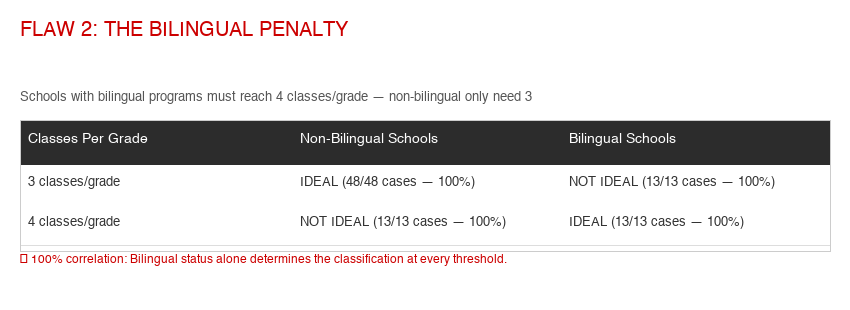
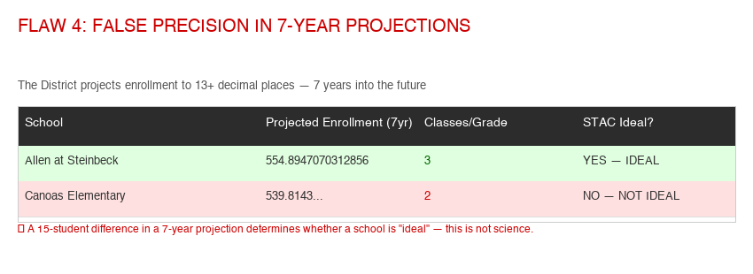

Toán Học tại SJUSD: Học Sinh Của Chúng Ta Đang Được Chuẩn Bị Thành Công — Hay Bị Kìm Hãm?
Đây là một câu chuyện âm thầm hơn việc đóng cửa trường — và là điều mà mọi gia đình SJUSD đều có phần liên quan: cách học khu dạy toán, và cách họ quyết định học sinh nào được tiếp cận các khóa học nâng cao. Dữ liệu cho thấy học sinh SJUSD đạt điểm thấp hơn các bạn cùng lứa ở những học khu lân cận — nhưng như bạn sẽ thấy, khoảng cách đó nằm ở cơ hội và hỗ trợ mà một học khu cung cấp, không phải khả năng của con em chúng ta. Đây là hướng dẫn bằng ngôn ngữ dễ hiểu về cách hệ thống vận hành, ý nghĩa của nó đối với con bạn, và những gì bạn có thể làm.
CAASPP 2024–25
Cùng quận — điều mà cơ hội tiếp cận có thể tạo ra
tại SJUSD
Quỹ GATE đã bị cắt
Những con số này đo lường cách các học khu hoạt động và những gì họ cung cấp — không phải độ thông minh hay khả năng của bất kỳ học sinh nào. Học sinh SJUSD thông minh không kém gì học sinh ở các học khu lân cận. Khi một học khu gần đó cho kết quả cao hơn, thường là do những lựa chọn mà người lớn đưa ra — học sinh có thể tăng tốc sớm đến mức nào, họ dùng chương trình giảng dạy nào, họ cung cấp bao nhiêu hỗ trợ. Đó là tin tốt: cơ hội là điều mà một cộng đồng có thể thay đổi. Vì vậy khi đọc tiếp, hãy nghĩ về khoảng cách này không phải là "con em chúng ta tụt hậu," mà là "con em chúng ta xứng đáng có cùng những cánh cửa rộng mở" — và phần còn lại của trang này nói về cách đạt được điều đó.
Tại Sao Việc Xếp Lớp Toán Quan Trọng — và Tại Sao Nó Không Chỉ Là Chuyện Vào Đại Học
Dễ cho rằng việc xếp lớp toán chỉ quan trọng đối với việc vào một trường đại học chọn lọc. Việc tiếp cận đại học là có thật — nhưng đó là cách hiểu hẹp nhất về những gì đang đặt cược. Một quyết định xếp lớp ở trung học cơ sở định hình các lựa chọn của một đứa trẻ theo những cách vượt xa một lá thư trúng tuyển.
Hệ thống UC và CSU yêu cầu ba năm toán dự bị đại học và khuyến nghị mạnh mẽ bốn năm. Đối với các cơ sở chọn lọc và bất kỳ ngành học nào yêu cầu môn tiên quyết STEM, năm thứ tư — và lý tưởng nhất là calculus — gần như được mặc định kỳ vọng, và các nhân viên tuyển sinh đánh giá cao độ nghiêm túc của khóa học năm cuối. Một học sinh được xếp vào lộ trình tiêu chuẩn ở lớp 6 chỉ đạt đến Pre-Calculus — bắt đầu quá trình vào đại học với ít các khóa học nâng cao mà các cơ sở chọn lọc tìm kiếm hơn, không phải vì thiếu khả năng, mà vì lộ trình chưa bao giờ được mở ra.
Việc học toán là một trong những yếu tố dự báo mạnh nhất về thu nhập sau này, và khoảng cách rất rõ rệt: vào tháng 5 năm 2021, mức lương trung vị cho các nghề STEM là $95,420 — hơn gấp đôi mức $40,120 trung vị cho các công việc phi STEM. Và đó không chỉ là "các nhà khoa học." Điều dưỡng, tài chính, các nghề lành nghề, hậu cần, dữ liệu, và hàng chục nghề nghiệp có thu nhập ổn định đều phụ thuộc vào việc học các môn định lượng. Đại số được gọi là "người gác cổng cho STEM" chính vì cánh cửa mà nó kiểm soát mở ra sự dịch chuyển kinh tế — không chỉ một ngành học đại học.
Vấn đề sâu xa nhất là thời điểm. Vì việc tăng tốc mang tính tuần tự, một quyết định xếp lớp đưa ra ở lớp 5 hoặc lớp 6 cực kỳ khó đảo ngược — một học sinh lộ trình tiêu chuẩn thực sự không thể đạt đến calculus vào năm cuối nếu không có chương trình can thiệp mùa hè mà các em phải được mời tham gia. Một bài kiểm tra duy nhất trong một ngày duy nhất, được chấm bằng một công thức loại trừ ý kiến của phụ huynh và giáo viên, có thể âm thầm đóng lại những lựa chọn mà học sinh thậm chí không biết là mình đã mất cho đến khi vào trung học. Đó không phải là vấn đề đại học — đó là vấn đề công bằng về việc ai được giữ cho các lựa chọn của mình luôn rộng mở.
Việc xếp lớp cứng nhắc, mờ ám không rơi đều lên tất cả mọi người. Nghiên cứu về các học khu đã chuyển sang tiêu chí tăng tốc khách quan, minh bạch (Wake County, NC) cho thấy nó làm yếu đi mối liên hệ giữa việc phân lớp và chủng tộc hay thu nhập của học sinh, và làm mạnh thêm mối liên hệ với kỹ năng thực tế — và việc tăng tốc dựa trên bài kiểm tra đã nâng cao một cách đo lường được tỷ lệ vào đại học và chọn ngành STEM cho các học sinh thuộc nhóm thiếu đại diện. SJUSD làm điều ngược lại: một công thức tính điểm loại trừ ý kiến của phụ huynh và giáo viên, áp dụng tại một học khu nơi học sinh gốc Tây Ban Nha chỉ đạt 19.7% năng lực toán và là cùng nhóm dân số có trường đang bị đóng cửa và bị nhận diện quá mức vào giáo dục đặc biệt. Việc gác cổng không trung lập khi nó liên tục lọc ra chính những đứa trẻ ấy.
Công bằng mà nói: một số nhà nghiên cứu lập luận rằng calculus bị lạm dụng như một cơ chế phân loại và rằng hầu hết các công việc không bao giờ cần đến toán cao cấp dùng để xếp hạng học sinh. Lời phê bình đó đáng được xem xét nghiêm túc — mục tiêu không phải là đẩy mọi đứa trẻ vào calculus. Nhưng nó thực ra làm sắc bén hơn luận điểm: nếu toán nâng cao hoạt động như một cổng phân loại có tính quyết định cao, thì ai kiểm soát việc tiếp cận cánh cổng đó, và một cách minh bạch ra sao, chính là điều quan trọng. Một hệ thống công bằng giữ cho cánh cửa luôn mở và để các gia đình tham gia vào quyết định. Hệ thống của SJUSD giữ nó đóng theo mặc định và bảo phụ huynh "hãy kiên nhẫn."
Các quyết định về chương trình giảng dạy và xếp lớp hiếm khi xuất hiện trên báo theo cách mà việc đóng cửa trường làm. Chúng được đưa ra âm thầm, trong thời hạn ngắn, trong ủy ban — và cửa sổ góp ý công khai có thể chỉ là một cuộc họp duy nhất. Nhưng đây là những quyết định ảnh hưởng đến con bạn mỗi ngày đi học. Đây là lý do tại sao việc cập nhật thông tin không phải là tùy chọn:
- Quyết định định hình lớp học hàng ngày của con bạn. Chương trình giảng dạy mà học khu chọn quyết định con bạn được dạy gì, bằng tài liệu nào, và như thế nào — trong nhiều năm. Nếu những lựa chọn đó được đưa ra theo mặc định (bất cứ thứ gì rẻ nhất hoặc đã có sẵn) thay vì theo những gì hiệu quả, con bạn sẽ sống với lựa chọn đó, chứ không phải các quản trị viên đã đưa ra nó.
- Những cánh cửa này khó mở lại. Toán mang tính tuần tự. Một quyết định xếp lớp đưa ra ở lớp 5 hoặc lớp 6, hoặc một chương trình yếu ở trung học cơ sở, sẽ tích lũy — đến trung học khoảng cách đã lớn và lộ trình calculus/A–G có thể đã ngoài tầm với. Cái giá của việc không nhận ra kịp thời sẽ phải trả sau, bởi chính học sinh.
- Học khu dẫn dắt bằng tin tốt của mình. Thông điệp công khai nhấn mạnh những chiến thắng (tỷ lệ tốt nghiệp cao) và im lặng về những con số khó khăn hơn (42% năng lực toán, chất lượng chương trình, ai được tăng tốc). Một phụ huynh chỉ nghe tiêu đề có thể bỏ lỡ chỉ số thực sự dự báo các lựa chọn của con mình.
- Bạn có quyền — nhưng chỉ khi bạn sử dụng kịp thời. Bộ Luật GD § 51224.7 cho phép bạn khiếu nại quyết định xếp lớp toán và ký miễn trừ; Bộ Luật GD §§ 60002 & 60200 và Đạo luật Williams cho công chúng quyền xem xét và góp ý về tài liệu giảng dạy trước khi chúng được áp dụng. Một quyền mà bạn không biết là một quyền bạn không thể thực hiện — và cửa sổ góp ý đóng lại rất nhanh.
- Sự quan tâm của phụ huynh là kiểm soát chính đối với quy trình. Công thức xếp lớp của chính SJUSD loại trừ rõ ràng ý kiến của phụ huynh và giáo viên. Điều duy nhất học khu không thể loại bỏ khỏi thiết kế là một phụ huynh xuất hiện — yêu cầu dữ liệu xếp lớp của con mình, hỏi về lịch trình áp dụng, phát biểu tại một cuộc họp Hội đồng. Phụ huynh có hiểu biết chính là trách nhiệm giải trình.
Theo dõi điều này không phải là về chính trị học khu. Đó là về việc giữ cho các lựa chọn của chính con bạn luôn rộng mở khi vẫn còn thời gian để hành động.
SJUSD So Với Các Học Khu Lân Cận
| Học khu | Năng lực Toán | Chênh lệch với SJUSD |
|---|---|---|
| Cupertino Union SD | 84.5% | +42.5 điểm |
| Los Gatos Union Elementary | ~72% | +30 điểm |
| Cambrian SD | ~61% | +19 điểm |
| Santa Clara Unified | 49.5% | +7.5 điểm |
| Campbell Union SD | ~45–48% | +3–6 điểm |
| San Jose Unified | 42.0% | — |
| Trung bình tiểu bang California | 37.3% | -4.7 điểm |
Chênh lệch nhân khẩu trong SJUSD cho thấy ai đang bị bỏ lại phía sau:
| Nhóm học sinh | Năng lực Toán |
|---|---|
| Châu Á | 81.9% |
| Da trắng | 63.2% |
| Người Mỹ gốc Phi | 25.0% |
| Gốc Tây Ban Nha | 19.7% |
| Khó khăn về kinh tế | 17.0% |
Năng lực toán của SJUSD về cơ bản đứng yên suốt bốn năm: 39.5% → 38.6% → 39.6% → 40.9% → 42.0%. Không có kế hoạch cải thiện, không có sự khẩn trương, và không có chiến lược công khai để thu hẹp khoảng cách với các học khu lân cận.
Hệ Thống Xếp Lớp Toán: Phân Tích Từng Điểm Một
SJUSD đã công bố Tiêu Chí và Quy Trình Xếp Lớp Toán Trung Học Cơ Sở (2024–25), một tài liệu 8 trang trình bày một hệ thống dựa trên điểm để xác định học sinh nào có thể học toán nâng cao. Đây là những gì nó nói — và ý nghĩa của nó đối với con bạn.
Để vào Accelerated Math 6, một học sinh sắp lên lớp 6 cần từ 5 điểm trở lên trên ba thước đo:
| Thước đo | Tiêu chí | Điểm |
|---|---|---|
| CAASPP (lớp 4 hoặc 5, điểm cao hơn) | Điểm 4 / Điểm 3 | 2 / 1 |
| NWEA Spring RIT (lớp 5) | ≥bách phân vị 90 / ≥80 / ≥70 | 3 / 2 / 1 |
| Báo cáo tiến độ lớp 5 | Đạt tiến bộ đầy đủ | 1 |
Tối đa có thể: 6 điểm. Học sinh có 4 điểm có thể làm bài đánh giá thử thách. Dưới 4 = lộ trình tiêu chuẩn, không có ngoại lệ.
Cho lớp 7: 5 điểm = Accelerated Math 7; 6+ điểm = Algebra 1. Thêm điểm khóa học (A/B = 2 điểm, C = 1 điểm) và khóa học nâng cao trước đó (1 điểm).
Cho lớp 8: 5+ điểm = thẳng vào Algebra 1 (bỏ qua Ramp Up). Cùng các thước đo cộng với lịch sử khóa học trước đó.
Điều Này Có Nghĩa Là Gì: Một Học Sinh Ở Bách Phân Vị 85 Toàn Quốc Có Thể Bị Từ Chối
Hãy xét một kịch bản thực tế từ các ví dụ của chính học khu:
Một học sinh lớp 5 đạt bách phân vị 85 trên NWEA (giỏi hơn 85% học sinh trên toàn quốc), được CAASPP Điểm 3 ("Đạt Chuẩn"), và đang đạt tiến bộ đầy đủ theo giáo viên. Điểm của em:
- CAASPP Điểm 3 = 1 điểm
- NWEA bách phân vị 85 = 2 điểm
- Tiến bộ đầy đủ = 1 điểm
- Tổng: 4 điểm — KHÔNG được tăng tốc
Học sinh này vượt trội hơn 85% học sinh trong cả nước. Ở Cupertino, em sẽ ở lộ trình nâng cao. Ở SJUSD, em bị xếp vào Math 6 tiêu chuẩn — và được bảo "hãy kiên nhẫn."
Những Gì Học Khu Rõ Ràng Từ Chối Xem Xét
Trang 6 của tài liệu xếp lớp liệt kê những gì không phải là một phần của quy trình:
- Đề xuất của giáo viên toán năm trước — người hiểu con bạn nhất về mặt học thuật
- Đề xuất của giáo viên toán hiện tại
- Yêu cầu của phụ huynh — tiếng nói của bạn bị loại trừ rõ ràng
- Đánh giá tư nhân hoặc độc lập — Kumon, gia sư, khóa học đại học cộng đồng không được tính
- Chỗ trống trong các lớp nâng cao — ngay cả khi còn ghế trống, học sinh không đủ điểm cũng không được chuyển lên
Bộ Luật Giáo Dục California § 51224.7 (Đạo Luật Xếp Lớp Toán 2015) cho phụ huynh những quyền cụ thể dường như mâu thuẫn với chính sách đã nêu của SJUSD:
- Việc xếp lớp phải sử dụng nhiều thước đo học thuật khách quan — được áp dụng đồng nhất bất kể chủng tộc, hoàn cảnh kinh tế xã hội, hay giới tính
- Học sinh phải được đánh giá lại ít nhất một lần trong tháng đầu của năm học
- Phụ huynh có quyền khiếu nại các quyết định xếp lớp lên Tổng Giám đốc
- Phụ huynh có thể ký một miễn trừ tự nguyện để xếp con vào một khóa học khác trái với khuyến nghị của học khu
Tài liệu xếp lớp của SJUSD không hề đề cập đến tùy chọn miễn trừ tự nguyện. Phần Hỏi-Đáp bảo các phụ huynh không đồng ý với việc xếp lớp: "Chúng tôi khuyến khích quý vị kiên nhẫn và hỗ trợ con mình." Hãy biết quyền của bạn.
Lộ Trình Tiêu Chuẩn Không Thể Đạt AP Calculus
Tài liệu của chính SJUSD cho thấy bốn lộ trình toán trung học phổ thông phổ biến nhất:
| Khóa học THCS cuối cùng | Lớp 9 | Lớp 10 | Lớp 11 | Lớp 12 |
|---|---|---|---|---|
| Math 8 (tiêu chuẩn) | Algebra 1 | Geometry | Algebra 2 | Chỉ Pre-Calculus |
| Math 8 + Summer Ramp Up | Geometry | Algebra 2 | Pre-Calculus | AP Calc hoặc AP Stats |
| Algebra 1 (nâng cao) | Geometry | Algebra 2 | Pre-Calculus | AP Calc hoặc AP Stats |
| Geometry (nâng cao nhất) | Algebra 2 | Pre-Calculus | AP Calc hoặc AP Stats | Multi-variable Calc |
Nếu con bạn ở lộ trình tiêu chuẩn và không được mời tham gia chương trình Ramp Up mùa hè (chỉ theo lời mời, yêu cầu CAASPP 3+, NWEA ≥70, VÀ điểm A hoặc B), AP Calculus không còn lựa chọn. Cánh cửa vào các trường đại học cạnh tranh trong lĩnh vực STEM đóng lại từ trung học cơ sở — dựa trên một công thức tính điểm loại trừ ý kiến của phụ huynh và giáo viên.
"Nhưng Tỷ Lệ Tốt Nghiệp Của Chúng Tôi Cao" — Tại Sao Đó Là Sàn, Không Phải Vạch Đích
Khi bị chất vấn về học thuật, học khu thường chỉ vào tỷ lệ tốt nghiệp — khoảng 94%. Con số đó thực sự tốt và đáng được ghi nhận. Nhưng tỷ lệ tốt nghiệp cao và kết quả toán yếu có thể cùng đúng một lúc — bởi vì một tấm bằng đo lường một mức tối thiểu, không phải sự sẵn sàng.
Ở California, tiêu chuẩn để tốt nghiệp được đặt thấp một cách có chủ ý — nó được thiết kế là một mức sàn mà mọi học sinh đều có thể vượt qua:
- Một tấm bằng chỉ yêu cầu điểm D trở lên ở các môn bắt buộc, và ít nhất là hai năm toán.
- Đủ điều kiện A–G — tiêu chuẩn để thậm chí được nộp đơn vào một trường UC hoặc CSU — yêu cầu điểm C trở lên và ba năm toán (khuyến nghị bốn năm). Một học sinh có thể tốt nghiệp với điểm D môn toán mà vẫn không đủ điều kiện vào bất kỳ trường đại học công lập nào của California.
- Trên toàn tiểu bang, chỉ khoảng 54% học sinh tốt nghiệp hoàn thành A–G và khoảng 52% được đánh giá là "sẵn sàng cho đại học/nghề nghiệp" trên Dashboard của tiểu bang — thấp hơn nhiều so với tỷ lệ tốt nghiệp. Tấm bằng và sự sẵn sàng đơn giản là không cùng một thước đo.
Bạn có thể thấy khoảng cách ngay trong chính các con số của SJUSD: tỷ lệ tốt nghiệp ~94% nằm ngay cạnh 42% năng lực toán — nghĩa là 58% học sinh dưới trình độ lớp về toán nhưng vẫn đúng lộ trình để lấy bằng. Đó không phải là mâu thuẫn; đó chính xác là điều xảy ra khi một tấm bằng không yêu cầu năng lực. Và nó liên hệ trực tiếp với việc xếp lớp: một học sinh bị loại khỏi lộ trình tăng tốc ở lớp 6 vẫn có thể tốt nghiệp đúng hạn — nhưng có thể không bao giờ hoàn thành chuỗi toán A–G hoặc đạt đến calculus. Tấm bằng nói "đã xong." Bảng điểm âm thầm nói "chưa sẵn sàng cho STEM đại học."
Vì vậy khi học khu nhấn mạnh việc tốt nghiệp, những câu hỏi thực sự đo lường tương lai của con bạn là: Tỷ lệ hoàn thành A–G của chúng ta là bao nhiêu? Bao nhiêu phần trăm học sinh tốt nghiệp sẵn sàng cho đại học/nghề nghiệp? Bao nhiêu phần trăm đạt năng lực toán? Tốt nghiệp là mức sàn mà mọi học sinh xứng đáng có. Sự sẵn sàng là mục tiêu — và đó là nơi dữ liệu của học khu cho thấy khoảng cách thực sự.
Chương Trình Giảng Dạy Đang Bị Ngừng — và Không Có Kế Hoạch Thay Thế Công Khai
SJUSD sử dụng chương trình SpringBoard của College Board cho Math 6 đến Algebra 2. Đây không phải là chương trình mà học khu chọn giữ lại hay loại bỏ — College Board đang ngừng hoàn toàn SpringBoard. Theo lịch trình của chính College Board:
- Đơn đặt hàng mới chỉ được chấp nhận đến hết năm học 2025–26, và hỗ trợ học tập chuyên môn kết thúc ngày 31 tháng 5, 2026 — sau đó College Board không còn đào tạo giáo viên về chương trình này.
- Phiên bản trung học phổ thông được EdReports đánh giá "Không Đạt Kỳ Vọng" — nó trượt ngay cổng đầu tiên (Trọng tâm & Tính nhất quán / phù hợp với chuẩn) một cách dứt khoát đến mức các nhà đánh giá thậm chí không bao giờ chấm điểm về độ nghiêm túc hay khả năng sử dụng. Việc tiếp tục dùng nó chưa bao giờ là một lựa chọn tốt.
- Điều đó có nghĩa SJUSD phải áp dụng một chương trình toán mới cho 2026–27 — nhưng tính đến thời điểm viết bài, học khu chưa công bố chương trình thay thế nào, ủy ban tuyển chọn nào, lịch trình nào, và quy trình lấy ý kiến phụ huynh nào.
Trang toán của SJUSD nêu rằng "Việc giảng dạy toán được hướng dẫn bởi Tiêu Chuẩn Cốt Lõi Chung của California (CCSS)." Đó là một tuyên bố về các tiêu chuẩn — những kỹ năng mà mọi học khu California phải dạy — không phải về sản phẩm SpringBoard. Một vài điều theo đó:
- Phù hợp với Common Core là mức sàn, không phải đặc điểm riêng của SpringBoard. Bất kỳ chương trình thay thế nào SJUSD áp dụng cũng sẽ phù hợp với CCSS — đó là yêu cầu của tiểu bang. Chương trình CPM của Cupertino cũng phù hợp với CCSS, và nó đạt đánh giá toàn xanh của EdReports trong khi phiên bản trung học của SpringBoard thì không.
- Nhà đánh giá độc lập hàng đầu thực ra mâu thuẫn với tuyên bố của học khu. Cổng đầu tiên của EdReports đánh giá chính xác điều mà học khu chỉ vào — sự phù hợp với các tiêu chuẩn (trọng tâm và tính nhất quán). Phiên bản trung học của SpringBoard không đạt cổng đó, trượt sớm đến mức độ nghiêm túc và khả năng sử dụng không bao giờ được chấm điểm. "Phù hợp với Common Core" là cách diễn đạt của học khu; bài đánh giá chương trình độc lập được trích dẫn nhiều nhất cho thấy tài liệu không đáp ứng đầy đủ các tiêu chuẩn trung học phổ thông.
- "Tiếp tục" nó không phải là một lựa chọn. Vì College Board đang ngừng chương trình, việc ở lại với SpringBoard sẽ có nghĩa là vận hành một sản phẩm không được hỗ trợ, ngừng in ấn, không có đào tạo từ nhà xuất bản. Câu hỏi thực sự không phải là có giữ nó hay không — mà là chương trình phù hợp với CCSS, có độ nghiêm túc cao nào sẽ thay thế nó, và lựa chọn đó được đưa ra như thế nào.
Vì vậy "nó phù hợp với Common Core" không trả lời câu hỏi — nó né tránh câu hỏi. Sự phù hợp là yêu cầu của luật; điều còn thiếu là một quy trình áp dụng minh bạch, công khai.
- Chương trình nào sẽ thay thế SpringBoard cho Math 6–Algebra 2 trong 2026–27?
- Ai đang tuyển chọn nó? Có ủy ban áp dụng chương trình không, và ai tham gia — giáo viên, quản trị viên, phụ huynh, thành viên cộng đồng?
- Lịch trình là gì? Quy trình tài liệu giảng dạy của California thường bao gồm thử nghiệm, xem xét công khai tài liệu mẫu, và một cuộc bỏ phiếu áp dụng của Hội đồng. SJUSD đang ở đâu trong quy trình đó — vài tháng trước khi sản phẩm họ dựa vào mất hỗ trợ?
- Phụ huynh có được góp ý không? Luật tiểu bang (Đạo luật Williams và Bộ Luật GD §§ 60002, 60200) cho công chúng quyền xem xét và góp ý về tài liệu giảng dạy trước khi áp dụng. SJUSD đã lên lịch bất kỳ giai đoạn xem xét hay góp ý công khai nào chưa?
Nếu bạn biết về một ủy ban tuyển chọn hoặc lịch trình áp dụng chưa được công khai, hãy cho chúng tôi biết — chúng tôi sẽ cập nhật trang này. Tính đến nay, chưa có gì được đăng tải.
Mối Liên Hệ Với Đóng Cửa Trường: Đóng Tòa Nhà, Không Thu Hẹp Khoảng Cách
Kể từ tháng 9 năm 2025, gần như toàn bộ năng lượng của Hội đồng và nhân viên đã dồn vào quy trình đóng cửa Trường của Ngày Mai. Trong cùng giai đoạn này:
- Năng lực toán đứng yên suốt 4 năm — không có kế hoạch cải thiện nào được trình bày cho Hội đồng
- Không có chương trình bồi dưỡng toán, chương trình năng khiếu, hay đội tuyển thi đấu nào tồn tại ở cấp học khu — quỹ GATE đã bị cắt
- Chương trình toán đang bị ngừng mà không có kế hoạch thay thế công khai
- Học sinh gốc Tây Ban Nha — 19.7% năng lực toán — là cùng nhóm dân số có trường bị nhắm đến để đóng cửa và bị nhận diện quá mức vào giáo dục đặc biệt (bất cân xứng đáng kể)
- Tiêu chí "trường học lý tưởng" của học khu đo lường số lớp mỗi khối — không phải kết quả học thuật, không phải điểm thi, không phải sự tiến bộ của học sinh
Học khu đang yêu cầu cộng đồng chấp nhận việc đóng cửa trường không thể đảo ngược như một con đường dẫn đến "trải nghiệm giáo dục tốt hơn." Nhưng đâu là bằng chứng cho thấy SJUSD có bất kỳ kế hoạch nào để cải thiện việc dạy toán? Các trường hợp nhất "lý tưởng" sẽ cung cấp những chương trình cụ thể nào mà các trường hiện tại không thể? Học khu chưa bao giờ trả lời câu hỏi này — vì việc đóng cửa không phải về học thuật. Nó về số lượng học sinh.
Cupertino Union School District phục vụ các gia đình chỉ cách SJUSD vài dặm và đạt 84.5% năng lực toán — gấp đôi tỷ lệ của SJUSD. Đây là những gì họ làm mà SJUSD không làm:
- Công bố ngưỡng điểm NWEA RIT chính xác (235–260+) — không chỉ bách phân vị — để các gia đình biết chính xác con mình cần gì
- Cho phép Algebra 1 ở lớp 7 và Geometry ở lớp 8 — lộ trình nâng cao nhất của SJUSD chỉ đạt đến Geometry ở lớp 8 từ Accel Math 6
- Có đa số học sinh trung học cơ sở học trước hai năm về toán — một triết lý hoàn toàn khác với việc gác cổng hạn chế của SJUSD
- Sử dụng CPM (College Preparatory Mathematics) cho trung học cơ sở — được EdReports đánh giá toàn xanh
Sự khác biệt không nằm ở nhân khẩu học hay nguồn tài trợ — mà ở triết lý. Cupertino giả định rằng học sinh có thể thành công trong toán nâng cao và cung cấp các lộ trình để đạt được điều đó. SJUSD giả định rằng các em không thể và xây dựng rào cản để chứng minh điều đó.
Sự tham gia của bạn quan trọng hơn học khu muốn bạn nghĩ. Đây là những bước cụ thể:
- Yêu cầu dữ liệu xếp lớp của con bạn. Học khu có nghĩa vụ cho bạn xem các điểm số dùng để quyết định việc xếp lớp toán của con. Hãy hỏi hiệu trưởng trường về chi tiết.
- Biết quyền của bạn theo Bộ Luật GD § 51224.7. Bạn có thể khiếu nại việc xếp lớp lên Tổng Giám đốc. Bạn có thể ký một miễn trừ tự nguyện để xếp con vào một khóa học nâng cao. Học khu có thể không nói cho bạn điều này — nhưng đó là luật tiểu bang.
- Hỏi về sự chênh lệch bách phân vị NWEA. Học khu sử dụng chuẩn RIT Quốc gia, không phải bách phân vị trên báo cáo của con bạn. Hãy hỏi họ dùng bách phân vị nào và nó được tính như thế nào.
- Yêu cầu một kế hoạch cải thiện toán tại các cuộc họp Hội đồng. Học khu đã trình bày hàng chục phương án đóng cửa nhưng không có kế hoạch nào để cải thiện việc dạy toán. Hãy hỏi: chiến lược để thu hẹp khoảng cách 42 điểm với Cupertino là gì?
- Hỏi chương trình nào sẽ thay thế SpringBoard. Nó đang bị ngừng trong 2026–27. Kế hoạch là gì? Ai tham gia tuyển chọn chương trình thay thế? Phụ huynh có được góp ý không?
- Kết nối với các phụ huynh khác. Quy trình xếp lớp toán ảnh hưởng đến mọi gia đình trong học khu. Nếu con bạn bị từ chối tăng tốc, bạn không đơn độc — và dữ liệu cho thấy hệ thống đang hoạt động đúng như được thiết kế để hạn chế tiếp cận, không phải mở rộng nó.
Câu hỏi mà mọi phụ huynh nên hỏi Hội đồng: Quý vị muốn đóng cửa trường của chúng tôi để tạo ra các trường "lý tưởng" — nhưng dữ liệu của chính quý vị cho thấy 58% học sinh không thể làm toán đúng trình độ lớp, khoảng cách với các học khu lân cận đang lớn hơn, và quý vị không có kế hoạch khắc phục. Đóng cửa các tòa nhà giúp con em chúng tôi học toán như thế nào?
Bức Tranh Toàn Cảnh: SJUSD trên 2025 School Dashboard của California
California chấm điểm mọi học khu trên School Dashboard chính thức của mình, mã hóa màu cho mỗi chỉ số từ Đỏ (thấp nhất) đến Xanh dương (cao nhất). Mỗi màu kết hợp hai yếu tố: học sinh đang làm tốt ra sao hiện nay (hiện trạng) và liệu có đang cải thiện hay không (thay đổi). Đây là phiếu báo cáo 2025 của San José Unified — và khi đọc cùng với phân tích môn toán ở trên, nó kể một câu chuyện nhất quán.
Một màu không phải là điểm chấm cho nỗ lực — nó là sự kết hợp giữa kết quả hiện tại và thay đổi gần đây. Điều đó quan trọng, vì một chỉ số có thể đạt màu "tốt hơn" trong khi học sinh vẫn còn cách xa trình độ lớp, đơn giản vì điểm số nhích lên. Hãy ghi nhớ điều này khi đọc tiếp.
Toán: một màu Vàng tốt hơn vẻ ngoài của nó
Dashboard xếp loại toán của SJUSD là Vàng — nhưng con số bên dưới là 26.9 điểm dưới ngưỡng "đạt chuẩn". Hãy so sánh với Ngữ Văn Anh, được xếp màu tệ hơn (Cam) dù chỉ 5.1 điểm dưới chuẩn. Vì sao toán — thấp dưới trình độ lớp gấp khoảng năm lần — lại là màu "tốt hơn"? Vì điểm toán tăng 3.6 điểm trong khi ELA giữ nguyên, và màu sắc thưởng cho sự chuyển động. Màu Vàng phản ánh tiến bộ thực sự, nhưng nó đánh giá thấp quãng đường còn phải đi — đúng bài học "đọc vượt qua dòng tít" từ phần tốt nghiệp ở trên.
Xu hướng xác nhận điều đó: toán đã leo trở lại kể từ 2023 (−34.1 → −30.4 → −26.9 điểm so với chuẩn) nhưng vẫn thấp dưới trình độ lớp hơn so với năm 2019 (−20.9). Tiến bộ, chứ chưa phải đích đến.
Phía sau mức trung bình của học khu: vẫn là những học sinh đó, một lần nữa
Màu Vàng đơn lẻ ấy che giấu ai đang gánh khoảng cách. Trong môn toán, 8 trong 12 nhóm học sinh rơi vào hai màu thấp nhất — 3 Đỏ và 5 Cam — trong khi mức trung bình của học khu được nâng đỡ bởi vài nhóm vượt xa chuẩn:
| Toán — điểm so với chuẩn (2025) | Nhóm |
|---|---|
| Đỏ — thấp xa nhất | Vô gia cư (−168) · Thanh thiếu niên nuôi dưỡng (−147) · Khó khăn về kinh tế-xã hội (−96) |
| Cam — thấp đáng kể | Học sinh học tiếng Anh dài hạn (−169) · Học sinh khuyết tật (−124) · Học sinh học tiếng Anh (−97) · Gốc Tây Ban Nha (−89) · Gốc Phi (−73) |
| Xanh lá / Xanh dương — đạt hoặc trên chuẩn | Gốc Á (+90) · Hai chủng tộc trở lên (+33) · Da trắng (+29) · Gốc Philippines (+4) |
Đây chính là khuôn mẫu mà phân tích xếp lớp dự đoán và phần Bất Cân Xứng Đáng Kể ghi nhận: cơ hội và hỗ trợ — chứ không phải năng lực — đi liền với thu nhập, ngôn ngữ và khuyết tật. Công việc không phải là "sửa" học sinh; mà là mở những cánh cửa giống nhau cho mọi nhóm.
Tốt nghiệp là Xanh lá. Sự sẵn sàng mới là bài kiểm tra thực sự.
Hai chỉ số Xanh lá nằm cạnh nhau và trông như tin tốt không cần bàn cãi: tỷ lệ tốt nghiệp 92.2% và 57.4% "sẵn sàng" trên chỉ số Đại học/Nghề nghiệp. Bước nhảy về sự sẵn sàng là có thật — tăng từ 38.6% năm 2019, một điểm sáng thực sự. Nhưng khoảng cách ~35 điểm giữa tốt nghiệp và sẵn sàng chính là luận điểm "sàn nhà, chứ không phải vạch đích": tấm bằng là mức tối thiểu; sự sẵn sàng mới là mục tiêu. Và sự sẵn sàng cực kỳ không đồng đều — chỉ 15.3% học sinh học tiếng Anh, 19.7% học sinh khuyết tật, và 11.6% học sinh vô gia cư đạt mức "sẵn sàng."
Dashboard không mâu thuẫn với phân tích môn toán của trang này; nó xác nhận điều đó từ bảng điểm của chính tiểu bang. Toán đang cải thiện nhưng vẫn thấp dưới trình độ lớp đáng kể (−26.9). Màu Vàng đầy hấp dẫn chính là lý do bạn phải đọc vượt qua con số tít lớn. Và các khoảng cách rơi vào cùng những học sinh mỗi lần — thu nhập thấp, học sinh học tiếng Anh, thanh thiếu niên nuôi dưỡng và vô gia cư, học sinh khuyết tật — trải dài qua toán, điểm danh và sự sẵn sàng cho đại học. Tiến bộ là có thật; công bằng là công việc còn dang dở. Phần đáng khích lệ: những điều này có thể khắc phục bằng lựa chọn của người lớn — chương trình giảng dạy, khả năng tiếp cận khóa học, hỗ trợ điểm danh và đầu tư có trọng điểm — chứ không phải bởi bất cứ điều gì thiếu sót ở các em.
Nơi SJUSD Có Thể Làm Tốt Hơn — Ngoài Môn Toán
Cùng một Dashboard ấy chỉ ra những bước tiếp theo rõ ràng và khả thi ở các lĩnh vực khác:
- Vắng mặt kinh niên (Cam, 20.3%). Tệ hơn toàn tiểu bang (17.1%) và vẫn gấp đôi mức 9.8% trước đại dịch. Thanh thiếu niên nuôi dưỡng (56.5%) và học sinh vô gia cư (58.1%) vắng mặt kinh niên ở tỷ lệ đáng kinh ngạc. Học khu ghi công cho các chuyến thăm nhà về mức giảm 5.2% — hãy mở rộng chương trình đó, phân tầng các can thiệp điểm danh, và xây dựng lại sự gắn kết với trường học mà khảo sát môi trường của chính học khu cho thấy đang sa sút.
- Ngữ Văn Anh (Cam) — chỉ số học thuật có màu thấp nhất. Toán nhận được sự chú ý, nhưng 8 trong 12 nhóm là Cam trong ELA. SJUSD cũng cần một kế hoạch đọc viết dựa trên bằng chứng — sàng lọc và can thiệp đọc sớm ở lớp K–2, các thực hành theo khoa học về đọc, và ELD được lồng ghép vào đọc viết.
- Tiến bộ của học sinh học tiếng Anh (Vàng, dưới mức tiểu bang). EL chiếm 22% học sinh, và EL dài hạn nằm ở mức −169 trong môn toán. Hãy củng cố ELD chỉ định/lồng ghép và chặn sự dồn ứ EL dài hạn. Lưu ý điểm sáng: học sinh mới được phân loại lại phát triển tốt (+3.4 trong ELA) — vậy nên việc phân loại lại nhanh hơn và được hỗ trợ tốt là có hiệu quả.
- Sự sẵn sàng cho các nhóm chưa được phục vụ đầy đủ. Mở rộng khả năng tiếp cận A–G và các lộ trình CTE cho những nhóm còn mắc kẹt thấp xa dưới mức "sẵn sàng" — học sinh học tiếng Anh (15%), học sinh khuyết tật (20%), thanh thiếu niên vô gia cư (12%).
- Công bằng trong kỷ luật. Người Mỹ bản địa (Đỏ, 9.3% và đang tăng), gốc Phi (7.2%), và thanh thiếu niên nuôi dưỡng (11.8%) bị đình chỉ cao hơn nhiều so với bạn đồng trang lứa. Hãy đầu tư vào các thực hành phục hồi và hỗ trợ hành vi cho những nhóm này.
- Đưa nguồn tiền CCEIS liên bang vào hoạt động. Vì kết luận Bất Cân Xứng Đáng Kể, SJUSD đã buộc phải dành riêng 15% ngân quỹ IDEA của mình cho can thiệp sớm (xem phần đó). Hãy hướng nó chính xác vào những nhóm hiện màu Đỏ ở đây — đó không phải là ngân sách thêm, đó là nghĩa vụ pháp lý đã có sẵn trên giấy tờ.
Bất Cân Xứng Đáng Kể: SJUSD Bị Cảnh Báo 3 Năm Liên Tiếp Vì Nhận Diện Quá Mức Học Sinh Gốc Tây Ban Nha
Sở Giáo dục California đã xác định San José Unified là bất cân xứng đáng kể theo luật liên bang IDEA trong ba năm liên tiếp — nghĩa là học khu xếp học sinh gốc Tây Ban Nha vào giáo dục đặc biệt với tỷ lệ vượt xa các nhóm khác. Dù được yêu cầu phải hành động, SJUSD vẫn chưa đưa ra kế hoạch khắc phục công khai nào.
Dòng Thời Gian: Ba Lần Vi Phạm, Không Hành Động
- 2022–23: Lần xác định đầu tiên — học sinh gốc Tây Ban Nha và người Mỹ bản địa có Khuyết tật Học tập Cụ thể
- 2023–24: Bị xác định lại — cùng một mô hình tiếp diễn
- 2024–25: Bị xác định năm thứ ba — học sinh gốc Tây Ban Nha có Khuyết tật Học tập Cụ thể
Luật Yêu Cầu Gì
Theo luật liên bang (IDEA §618(d)), khi một học khu bị cảnh báo về bất cân xứng đáng kể, học khu phải:
- Dành riêng 15% quỹ IDEA cho Dịch vụ Can thiệp Sớm Phối hợp Toàn diện (CCEIS)
- Nộp Mẫu Cam kết trong vòng 30 ngày kể từ khi bị xác định
- Hoàn thành quy trình Giám sát Tuân thủ và Cải thiện (CIM) gồm 4 bước: (1) Thu thập & Tìm hiểu, (2) Điều tra nguyên nhân gốc rễ, (3) Lập Kế hoạch cho Kết quả, (4) Thực hiện & Giám sát
- Nộp một kế hoạch CCEIS và các phụ lục hàng năm theo dõi tiến độ
Ba Năm và Vẫn Tiếp Diễn — SJUSD Đã Làm Gì?
Dù bị cảnh báo từ năm 2022, không có kế hoạch CCEIS nào của SJUSD được công khai. LCAP và LCAP Federal Addendum của học khu không hề nhắc đến bất cân xứng đáng kể, CCEIS, hay các hành động khắc phục cho việc nhận diện quá mức học sinh gốc Tây Ban Nha vào giáo dục đặc biệt. Để so sánh, San Francisco Unified công bố toàn bộ kế hoạch CCEIS của mình trực tuyến với phân tích nguyên nhân gốc rễ minh bạch và các bước hành động.
Quy trình CIM không có thời hạn cứng để đạt kết quả — sự cải thiện được theo dõi qua các sửa đổi hàng năm, và CDE cung cấp hỗ trợ kỹ thuật thay vì chế tài. Điều này có nghĩa một học khu có thể ở lại trong danh sách năm này qua năm khác với ít trách nhiệm giải trình công khai. SJUSD giờ đã bị cảnh báo ba năm liên tiếp mà không có cải thiện rõ ràng và không có kế hoạch công khai.
Cambrian School District, một học khu nhỏ hơn trong cùng quận, bị cảnh báo về cùng vấn đề — học sinh gốc Tây Ban Nha có Khuyết tật Học tập Cụ thể — trong 2023–24 và 2024–25. Khác với SJUSD, Cambrian đã có hành động công khai, được ghi chép:
- Tạo Mục Hành động LCAP 1.12 — "Giải quyết Bất cân xứng cho Học sinh Khuyết tật, Học sinh Học tiếng Anh, và Học sinh Gốc Tây Ban Nha" — rõ ràng tuân theo quy trình CIM của CDE cho CCEIS
- Dành riêng $108,575 quỹ IDEA cho 2025–26 (và $112,000 trong 2024–25) cụ thể cho các dịch vụ CCEIS
- Thu hút phụ huynh của học sinh có IEP thông qua các cuộc họp lấy ý kiến và một khảo sát đánh giá nhu cầu hàng năm
- Tự xác định trong LCAP của họ là "Targeted Level 2 về Bất cân xứng" với một phát hiện không tuân thủ trong Đánh giá Không tuân thủ Thời hạn
- Công bố cập nhật tiến độ thừa nhận kế hoạch "vẫn đang được phát triển" với "các nỗ lực thu hút phụ huynh sớm và tinh chỉnh hệ thống đang được tiến hành"
Cambrian phục vụ ~3,056 học sinh. SJUSD phục vụ ~32,000. Nếu một học khu chỉ bằng một phần mười quy mô có thể công khai thừa nhận phát hiện bất cân xứng của mình, dành ngân sách khắc phục, và báo cáo tiến độ trong LCAP — tại sao SJUSD không thể?
San Francisco Unified School District, một học khu đô thị lớn cũng bị cảnh báo về bất cân xứng đáng kể — với học sinh Da đen/gốc Phi, gốc Latinx, và đảo Thái Bình Dương bị nhận diện quá mức — đã có hành động khắc phục toàn diện, được ghi chép công khai:
- Tạo một nhóm CCEIS chuyên trách gồm 6 người do Giám đốc Matthew Fitzsimons và Dr. Talya Huntley dẫn dắt, đặt trong phòng Giáo dục Đặc biệt
- Phát triển và công bố Kế hoạch CCEIS 2025 được CDE phê duyệt trình bày chi tiết phân tích nguyên nhân gốc rễ, các can thiệp có mục tiêu, và kết quả đo lường được
- Triển khai Chương trình Shoestrings — một can thiệp toàn diện cho trẻ mầm non được phát triển hợp tác với Viện Mầm non của Stanford, tập trung vào hỗ trợ trước khi giới thiệu trong giáo dục phổ thông
- Chuyển hướng 15% quỹ giáo dục đặc biệt IDEA sang các hoạt động CCEIS phục vụ học sinh trong giáo dục phổ thông — đúng như luật liên bang yêu cầu
- Tổ chức Hội nghị CCEIS vào tháng 10 năm 2025 quy tụ các nhà giáo dục, gia đình, và đối tác cộng đồng để xem xét tiến độ và đồng bộ chiến lược
- Công bố minh bạch đầy đủ trực tuyến với một trang web chuyên trách trình bày chi tiết quy trình CIM, các phát hiện bất cân xứng, và các hành động khắc phục
SFUSD phục vụ ~49,000 học sinh — lớn hơn SJUSD. Nếu San Francisco có thể xây dựng một cơ sở hạ tầng CCEIS đầy đủ với nhân viên chuyên trách, một quan hệ đối tác với Stanford, và báo cáo công khai — vậy lý do của SJUSD là gì?
Mối liên hệ giữa bất cân xứng đáng kể và việc đóng cửa Trường của Ngày Mai là trực tiếp:
- Các trường bị nhắm đến để đóng cửa tập trung không cân xứng ở trung tâm và East San Jose — chính những khu phố nơi học sinh gốc Tây Ban Nha tập trung
- SJUSD đã đang đóng các chương trình Lớp Học Ban Ngày Đặc biệt (SDC) tại Graystone, Schallenberger, và Empire Gardens — gộp chúng vào chỉ 3 trường (Washington, Grant, Allen at Steinbeck). Phụ huynh được thông báo qua email mà không tham vấn trước
- Yêu cầu của Ủy viên Nicole Gribstad nhằm thêm vấn đề gộp SDC vào chương trình nghị sự hội đồng ngày 27 tháng 3 đã bị từ chối
- Học khu đồng thời bị cảnh báo vì nhận diện quá mức học sinh gốc Tây Ban Nha vào giáo dục đặc biệt và đóng cửa các trường phục vụ chính những học sinh đó
Những Chênh Lệch Rộng Hơn Tại SJUSD
Dự án Miseducation của ProPublica ghi nhận thêm các chênh lệch trên toàn học khu:
Mô hình rất rõ ràng: SJUSD nhận diện quá mức học sinh gốc Tây Ban Nha cho giáo dục đặc biệt, ghi danh thiếu các em vào các chương trình AP và năng khiếu, đình chỉ học sinh Da đen với tỷ lệ gấp 3× học sinh Da trắng, và giờ đang đóng cửa các trường phục vụ những cộng đồng này — tất cả trong khi không đưa ra được một kế hoạch khắc phục công khai sau ba năm trong danh sách theo dõi của tiểu bang.
Nghịch Lý: Nhiều Tiền Hơn, Ít Học Sinh Hơn, Đóng Cửa Trường
San José Unified đã có thặng dư lành mạnh $25,7 triệu (2022–23) và $18,9 triệu (2023–24) trên doanh thu quỹ chung $476 triệu và $504 triệu. Sau đó trong năm 2024–25, học khu dự kiến chỉ $462 triệu doanh thu trong khi ngân sách $492 triệu chi tiêu — một ngân sách thâm hụt $30 triệu. Đó là biến động $49 triệu trong hai năm. Trong thập kỷ qua, số học sinh giảm hơn 6.000 — giảm 20%. Mặc dù có nhiều tiền hơn bao giờ hết cho mỗi học sinh, học khu nay nói rằng phải đóng cửa tới 9 trường tiểu học.
Trang web này phân tích dữ liệu tài chính công khai để bạn — phụ huynh, giáo viên, người đóng thuế và thành viên cộng đồng — có thể hiểu tiền đến từ đâu, đi đâu, và liệu đóng cửa trường có thực sự là lựa chọn duy nhất.
Doanh Thu: Tiền Đến Từ Đâu?
Trước khi đi sâu vào các con số, cần hiểu cách các học khu California nhận tiền. Không đơn giản là "chính phủ trả cho trường học." Có nhiều nguồn thu, công thức phức tạp, và một điểm khác biệt quan trọng khiến SJUSD khác với hầu hết các học khu trong tiểu bang.
Tiền Chảy Đến Trường Của Bạn Như Thế Nào
Tiền Của SJUSD Thực Sự Đến Từ Đâu (2024–25)
Đây là cách ngân sách quỹ chung $462 triệu được phân theo nguồn. Lưu ý thuế bất động sản chiếm ưu thế lớn — phần xanh đó là 85 xu trong mỗi đô la.
$390.9M
$46.6M
$14.1M
$10,5 triệu (trợ cấp, thuế thửa đất)
Công Thức Quan Trọng: LCFF (Công Thức Tài Trợ Kiểm Soát Địa Phương)
Từ năm 2013, California tài trợ trường học qua LCFF. Phiên bản đơn giản: tiểu bang tính mục tiêu tài trợ cho mỗi học sinh cho mỗi học khu, sau đó kiểm tra học khu đã thu được bao nhiêu từ thuế bất động sản địa phương. Nếu có thiếu hụt, tiểu bang bù đắp.
SJUSD trở thành học khu Basic Aid vào năm 2020–21. Tại Silicon Valley, nơi giá nhà thuộc hàng cao nhất cả nước, doanh thu thuế bất động sản rất lớn. Điều này có nghĩa là tài trợ của SJUSD gắn với giá trị bất động sản, không phải số lượng học sinh. Khi gia đình rời khỏi học khu, tiền không đi theo họ. Khoảng 10% các học khu California có tình trạng này.
Câu hỏi đặt ra: Nếu mất học sinh không có nghĩa là mất tiền, tại sao học khu tuyên bố có khủng hoảng tài chính đòi hỏi phải đóng cửa trường?
Doanh Thu Trong 10 Năm (Quỹ Chung)
Bảng dưới đây cho thấy vị thế tài chính của SJUSD đã tăng trưởng năm này qua năm khác, ngay cả khi số học sinh giảm. Lưu ý quan trọng: Con số $532 triệu do NCES báo cáo cho năm 2021–22 là tổng doanh thu tất cả quỹ (bao gồm quỹ vốn và quỹ đặc biệt), không chỉ quỹ chung. Dữ liệu 2024–25 đến từ Tổng quan Ngân sách LCAP của SJUSD nộp cho CDE — đây là con số quỹ chung $462 triệu.
| Năm tài chính | Tổng doanh thu | So với năm trước | Số học sinh | Nguồn |
|---|---|---|---|---|
| 2014–15 | $321M | — | ~30,800 | SVTA / Ed-Data |
| 2015–16 | $337M | +5.0% | ~31,000 | Ed-Data (est.) |
| 2016–17 | $355M | +5.3% | ~30,700 | Ed-Data (est.) |
| 2017–18 | $370M | +4.2% | ~30,500 | Ed-Data (est.) |
| 2018–19 | $385M | +4.1% | ~29,600 | Ed-Data (est.) |
| 2019–20 | $397M | +3.1% | ~28,800 | Ed-Data (est.) |
| 2020–21 ★ | $430M | +8.3% | ~26,300 | Ed-Data (est.) |
| 2021–22 | $532M ★★ | +23.7% | ~25,700 | NCES CCD (all-funds) |
| 2022–23 | $476M (GF) | −10.5% | 25,451 | CDE SACS Unaudited Actuals |
| 2023–24 | $504M (GF) | +5.7% | 25,976 | CDE SACS Unaudited Actuals |
| 2024–25 ④ | $462M (GF) | — | 25,409 | SJUSD LCAP Budget Overview (CDE) |
★ SJUSD became a Basic Aid (locally funded) district. Blue-shaded rows include significant federal ESSER relief funding.
★★ $532M is the NCES-confirmed all-funds total revenue for FY 2021–22. General fund revenue alone is lower.
③ 2022–23 GF actuals: Revenue $476.4M, Expenditures $443.0M — surplus of $25.7M. 2023–24 GF actuals: Revenue $503.6M, Expenditures $476.9M — surplus of $18.9M. Both from CDE SACS Data Viewer, Unaudited Actuals (viewer.sacs-cde.org).
④ 2024–25 general fund revenue: $462,171,756 — from SJUSD's official LCAP Budget Overview filed with CDE (PDF). Breakdown: LCFF $390.9M (85%), Other state $46.6M (10%), Local $10.5M (2%), Federal $14.1M (3%). Budgeted expenditures: $492,473,846 — a $30.3M deficit budget.
⑤ The trend: Surpluses shrank from $25.7M (2022–23) → $18.9M (2023–24) → then the district budgeted a $30.3M deficit for 2024–25 — a $49M swing in two years. Revenue dropped $41M while spending barely moved.
Related spending data (from Mercury News editorial, Mar 2025): Expenditures rose from $366M (2019–20) to $492M (2023–24) — a 34% increase in 5 years while enrollment fell 13% and inflation rose 20–22%.
Doanh thu quỹ chung của SJUSD đạt đỉnh $504 triệu trong năm 2023–24 — tăng từ $321 triệu một thập kỷ trước — ngay cả khi học khu hiện phục vụ ít hơn khoảng 5.400 học sinh. Học khu có thặng dư lành mạnh $25,7 triệu (2022–23) và $18,9 triệu (2023–24). Sau đó trong năm 2024–25, doanh thu giảm $41 triệu xuống $462 triệu trong khi chi tiêu hầu như không thay đổi — tạo ra ngân sách thâm hụt $30,3 triệu. Đó là biến động $49 triệu trong hai năm. Tiền đã đi đâu?
Chi Tiêu: Tiền Đi Đâu?
Theo ban biên tập Mercury News (tháng 3 năm 2025), chi tiêu của SJUSD tăng từ $366 triệu trong năm 2019–20 lên $492 triệu trong năm 2023–24 — tăng 34% chỉ trong năm năm. Trong cùng thời kỳ đó, số học sinh giảm 13%. Số nhân viên của học khu thực tế còn tăng nhẹ, 0,4%.
Mỗi Đồng Đô La Đi Đâu
Khi SJUSD nhận $462 triệu, đây là cách phân chia. Hãy coi nó như ngân sách gia đình — nhưng với nửa tỷ đô la và 25.000 trẻ em phụ thuộc vào đó.
Khoảng 75 xu trong mỗi đô la dành cho con người — lương và phúc lợi. Điều này bình thường với các học khu. Nhưng điều đó có nghĩa là khi chi phí tăng (tỷ lệ lương hưu, phí bảo hiểm y tế, tăng lương đàm phán), chúng tăng nhanh — và có rất ít chỗ để cắt giảm mà không cắt giảm nhân sự. Câu hỏi là liệu mức nhân sự của SJUSD có phù hợp cho 25.000 học sinh khi nó được xây dựng cho 31.000.
Theo U.S. News Education, SJUSD chi khoảng $16.520 cho mỗi học sinh mỗi năm. Các hạng mục chi tiêu chính được phân chia đại khái như sau:
Bùng Nổ Phúc Lợi Nhân Viên
Một yếu tố chi phí chính là phúc lợi nhân viên — lương hưu (CalSTRS, CalPERS), chăm sóc sức khỏe hưu trí, và các phúc lợi khác. Một phân tích năm 2017 của David Crane cho thấy phúc lợi nhân viên tại SJUSD tăng từ $58,6 triệu trong năm 2013–14 lên $70 triệu trong năm 2014–15 — tăng 19% chỉ trong một năm. Đến 2019–20, phúc lợi dự kiến tiêu tốn 25% tổng doanh thu học khu.
Năm 2025, ba công đoàn (SJTA, CSEA, và AFSCME) cáo buộc SJUSD thiếu tài trợ phúc lợi sức khỏe và phúc lợi nhân viên hơn $30 triệu kể từ 2017–18. Theo các công đoàn, học khu đã âm thầm chuyển từ sử dụng số lượng vị trí nhân viên được phê duyệt sang chỉ sử dụng số vị trí đã được lấp đầy khi tính đóng góp phúc lợi — dẫn đến hàng triệu đô la không đến được Quỹ Sức Khỏe và Phúc Lợi nhân viên. Giám đốc Tài chính SJUSD Seth Reddy thừa nhận vấn đề và nói học khu "cam kết sửa chữa điều này."
🚨 Khủng Hoảng Dự Trữ: Lưới An Toàn Trống Rỗng Của SJUSD
Luật California yêu cầu mọi học khu phải duy trì tối thiểu "Dự trữ cho Bất trắc Kinh tế" — về cơ bản là quỹ dự phòng. Đối với các học khu có quy mô SJUSD (trên 1.000 ADA), mức tối thiểu được tiểu bang khuyến nghị là 2% tổng chi tiêu. Điều này được quy định trong Mục 5 của Bộ Quy tắc California và được giám sát bởi Văn phòng Giáo dục Quận.
Đây là cách SJUSD so sánh, dựa trên hồ sơ của chính học khu nộp cho tiểu bang:


Tổng số dư quỹ cuối kỳ của SJUSD là $109,367,369 trong năm 2023–24. Nhưng $104.2 triệu trong số đó bị hạn chế — được chỉ định hợp pháp cho các chương trình cụ thể và không thể sử dụng cho hoạt động chung. Chỉ $5.2 triệu không bị hạn chế, và trong số đó, $3.8M đã phân bổ cho cam kết cụ thể, $0.1M không thể chi tiêu, chỉ còn $1.27M chưa phân bổ. Mục Dự trữ cho Bất trắc Kinh tế (Mã Đối tượng 9789) hiển thị $0.
$104.2 triệu bị hạn chế bao gồm: $48.1M Khác Hạn Chế Địa Phương, $21.5M Trợ cấp Khẩn Cấp Phục Hồi Học Tập, $15.1M Trợ cấp Nghệ thuật/Âm nhạc, $7.0M Học Tập Mở Rộng, và $3.6M tài khoản bảo trì. Không có khoản nào có thể chuyển hướng để bù đắp thâm hụt hoạt động.
Điều này có nghĩa là SJUSD đã hoạt động dưới mức dự trữ tối thiểu được tiểu bang khuyến nghị trong ít nhất hai năm liên tiếp. Văn phòng Giáo dục Quận lẽ ra phải cảnh báo điều này. Một học khu chạy thâm hụt $30,3 triệu trong năm 2024–25 mà gần như không có dự trữ không hạn chế đang trong nguy hiểm tài chính nghiêm trọng.
Báo cáo Thực tế Chưa Kiểm toán cho thấy chi phí phúc lợi nhân viên tăng đột biến, giúp giải thích thâm hụt:
Riêng phúc lợi sức khỏe đã tăng $11.9 triệu trong một năm — tăng 25.2%. Tổng phúc lợi nhân viên tăng từ $124.4M lên $136.7M (+9.9%). Điều này phù hợp với tuyên bố của công đoàn về hơn $30M phúc lợi thiếu hụt từ 2017–18. Câu hỏi là: tại sao chi phí này không được lên kế hoạch, và tại sao đóng cửa trường là giải pháp được đề xuất?
Lương Quản Lý: Ai Được Trả Bao Nhiêu
Dữ liệu SACS cho phép chúng ta phân tích chính xác mỗi đồng lương đi đâu. Trong năm 2023–24, quỹ chung của SJUSD chi $247,5 triệu cho lương và thêm $124,4 triệu cho phúc lợi — tổng cộng $371,8 triệu, hay 78% tổng chi tiêu, chỉ cho chi phí nhân sự.
SJUSD liệt kê 13 lãnh đạo cấp cao trên trang quản lý, đứng đầu là Tổng Giám đốc Nancy Albarrán (giữ chức từ 2016). Đội ngũ bao gồm Giám đốc Tài chính, Phó Tổng Giám đốc, Trợ lý Tổng Giám đốc, và 9 Giám đốc phụ trách mọi thứ từ tài chính đến chiến lược dữ liệu đến truyền thông.
Dựa trên dữ liệu SACS và số liệu NCES, lương trung bình của quản trị viên (chứng chỉ + phân loại, 99,5 vị trí) là khoảng $215.000/năm. Lương trung bình giáo viên (1.189 FTE) là khoảng $120.400/năm. Tổng lương thưởng của Tổng Giám đốc Albarrán là $367.302 vào năm 2020 (dữ liệu công khai gần nhất) — và có khả năng đã tăng kể từ đó.
SJUSD sử dụng 23 quản trị viên cấp học khu và 76,5 quản trị viên cấp trường cho 25.000 học sinh. Đó là một quản trị viên cho mỗi 251 học sinh. Tổng lương quản trị lên đến $21,4 triệu/năm. Trong khi đó, học khu nói phải đóng cửa trường tiểu học trong khu phố để tiết kiệm. Học khu sẽ tiết kiệm được bao nhiêu nếu giảm 10–15% quản trị viên thay vì — hoặc bên cạnh — đóng cửa trường?
Chi tiêu 2019–20
~28,800 students
Chi tiêu 2024–25 (Ngân sách)
Revenue: $462M
$30.3M deficit budget
Số Học Sinh: Số Lượng Ngày Càng Thu Hẹp
Số học sinh của học khu đã theo xu hướng giảm đều. Năm 2008, SJUSD phục vụ khoảng 35.000 học sinh. Đến 2017–18, con số đó giảm xuống khoảng 30.500. Hiện tại (2024–25), số học sinh khoảng 25.409 — mất khoảng 10.000 học sinh kể từ 2008, hoặc hơn 6.000 kể từ 2017–18.
Học khu quy cho chi phí sinh hoạt cao ở Silicon Valley đẩy gia đình đi, tỷ lệ sinh giảm, và sự gia tăng của trường charter và trường tư thục. San Francisco Chronicle báo cáo rằng SJUSD có mức giảm số học sinh lớn nhất trong 10 học khu lớn nhất vùng Bay Area từ 2019–20 đến 2021–22: giảm 11%.
Điều quan trọng là, trong khi số học sinh giảm 20%, học khu vẫn duy trì cùng số trường tiểu học (26) cho đến kế hoạch đóng cửa năm nay. Một nửa trong 26 trường tiểu học hiện phục vụ ít hơn 350 học sinh. Trường nhỏ nhất có ít hơn 200 học sinh.
Chi Tiêu Trên Mỗi Học Sinh: Nhiều Tiền Hơn Cho Mỗi Học Sinh
Đây là nơi phép tính trở nên thực sự thú vị. Vì doanh thu tiếp tục tăng trong khi số học sinh tiếp tục giảm, số tiền có sẵn cho mỗi học sinh đã tăng vọt.
Trong năm 2014–15, học khu có khoảng $10.420 cho mỗi học sinh. Đến 2023–24, con số đó tăng lên ~$19.390 cho mỗi học sinh — gần gấp đôi. Mức trung bình toàn tiểu bang cho các học khu thống nhất là khoảng $18.400 cho mỗi học sinh. Ngay cả với ngân sách giảm 2024–25, SJUSD vẫn chi ~$18.190 cho mỗi học sinh. Nếu học khu có nhiều tiền hơn bao giờ hết cho mỗi học sinh, tại sao lại cần đóng cửa trường?
Quỹ Cứu Trợ Liên Bang: ESSER và Các Trợ Cấp Khác
Từ 2020 đến 2024, một làn sóng tiền liên bang chưa từng có đã chảy vào các học khu trên khắp nước Mỹ để giúp họ vượt qua đại dịch COVID-19. Tiền này đến trong ba đợt thông qua Quỹ Cứu Trợ Khẩn Cấp Trường Tiểu Học và Trung Học (ESSER).
| Đợt | Luật liên bang | Ngày | Tổng (quốc gia) | Tổng California | Hạn chót |
|---|---|---|---|---|---|
| ESSER I | CARES Act | Mar 2020 | $13.2B | ~$1.6B | Sep 2022 |
| ESSER II | CRRSA Act | Dec 2020 | $54.3B | ~$6.7B | Sep 2023 |
| ESSER III | ARP Act | Mar 2021 | $122.8B | ~$13.5B | Sep 2024 |
| Total | $190.3B | ~$23.4B |
California nhận được khoảng $23,4 tỷ tổng quỹ ESSER — nhiều nhất trong các tiểu bang. Các quỹ này được phân phối cho các học khu dựa trên phân bổ Title I (học sinh thu nhập thấp). SJUSD nhận phần của mình; các mục doanh thu liên bang của học khu tăng đáng kể trong giai đoạn 2020–2024.
Quỹ ESSER được dùng để: ngăn chặn lây lan COVID (PPE, thông gió, vệ sinh), giải quyết mất mát học tập do đóng cửa trường, dịch vụ sức khỏe tâm thần, công nghệ cho học trực tuyến, duy trì mức nhân sự, và chương trình hè/sau giờ học. ESSER III đặc biệt yêu cầu ít nhất 20% quỹ phải dành cho các chương trình dựa trên bằng chứng để giải quyết mất mát học tập.
Tất cả quỹ ESSER phải được cam kết trước 30 tháng 9 năm 2024. "Vách tài chính" này có nghĩa là các học khu sử dụng tiền ESSER cho chi phí thường xuyên — như tuyển nhân viên mới — nay đối mặt với khoảng trống tài trợ. Như Chủ tịch Hội đồng Học khu Franklin-McKinley George Sanchez lưu ý về tác động rộng hơn: "Tài trợ rất ảnh hưởng đến chương trình giảng dạy... trường không nhận được tài trợ liên bang như trong thời kỳ cao điểm đại dịch COVID-19."
Các Nguồn Tài Trợ Đáng Chú Ý Khác
Được cử tri phê duyệt năm 2016, thuế thửa đất $72/năm này tạo ra khoảng $5 triệu hàng năm trong tám năm. Nó được sử dụng cho giữ chân giáo viên, chương trình học thuật, và lương nhân viên. Hết hạn ngày 30 tháng 6 năm 2025. Học khu cố gắng gia hạn với Measure A trong cuộc bầu cử đặc biệt tháng 5 năm 2025, nhưng cử tri đã bác bỏ. Cuộc bầu cử tốn $2–3 triệu.
Trái phiếu nghĩa vụ chung được phê duyệt năm 2012 để sửa chữa và nâng cấp cơ sở trường học — phòng học, phòng thí nghiệm khoa học, công nghệ, an toàn, và hệ thống năng lượng. Tiền này không thể sử dụng cho hoạt động hoặc lương; chỉ dành cho tòa nhà và cơ sở hạ tầng.
Được 64,7% cử tri phê duyệt vào tháng 11 năm 2024, trái phiếu khổng lồ này sẽ tốn người đóng thuế khoảng $81 triệu mỗi năm trong khoảng 30 năm ($60 cho mỗi $100.000 giá trị đánh giá nhà). Nó tài trợ nâng cấp cơ sở, xây dựng nhà ở cho nhân viên (600+ đơn vị dự kiến), và hiện đại hóa lớp học. SPUR lưu ý rằng học khu không đưa ra kế hoạch chi tiêu trước khi đưa vào lá phiếu.
Các trường trong Quận Santa Clara nhận được khoảng $20,9 triệu quỹ xổ số trong quý 2 của 2023–24, với tổng tích lũy gần $1,9 tỷ kể từ 1985. Quỹ xổ số nhằm bổ sung — không phải thay thế — tài trợ thường xuyên.
SJUSD thu phí nhà phát triển trên các công trình xây dựng dân cư và thương mại mới trong ranh giới học khu. Các khoản phí này được giữ trong tài khoản riêng và nhằm bù đắp chi phí tiếp nhận học sinh mới từ phát triển mới.
Trái Phiếu & Thuế Thửa Đất: Cử Tri Đã Phê Duyệt Gì
Trong 25 năm qua, cử tri SJUSD đã phê duyệt nhiều biện pháp trái phiếu và thuế thửa đất. Đây là tóm tắt các biện pháp chính:
Tổng cộng, cử tri SJUSD đã phê duyệt gần $1,87 tỷ nợ trái phiếu kể từ 2002 — cộng thêm thuế thửa đất liên tục. Riêng Measure R 2024 sẽ tốn người đóng thuế khoảng $2,4 tỷ bao gồm lãi suất trong 30 năm. Trong khi đó, học khu cũng nhận hàng trăm triệu doanh thu thuế bất động sản hàng năm, quỹ tiểu bang, và cứu trợ đại dịch liên bang. Một người phản đối Measure R lưu ý: "Năm 2012, chúng ta phê duyệt $290 triệu cho sửa chữa... nhưng học khu nay yêu cầu thêm $1,15 tỷ."
Đóng Cửa Trường: Kế Hoạch "Trường Học Ngày Mai"
Vào tháng 9 năm 2025, Hội đồng Giáo dục SJUSD khởi động sáng kiến "Trường Học Ngày Mai" — một quy trình đánh giá các trường tiểu học về khả năng hợp nhất, đóng cửa, hoặc thay đổi ranh giới. Học khu ban đầu đưa ra ba phương án đề xuất đóng cửa tối đa 9 trường tiểu học. Trong 6 tuần, STIC đã xem xét 8 phương án — sau đó vào ngày 3 tháng 3 năm 2026, dưới áp lực mạnh mẽ từ cộng đồng, đã loại bỏ 5 trong 6 phương án còn lại và giới hạn đóng cửa ở tối đa 4 trường. Ngày 26 tháng 3 năm 2026, Hội đồng đã bỏ phiếu 3–2 đóng cửa năm trường tiểu học, có hiệu lực từ năm học 2026–27.
Lý do học khu đưa ra: số học sinh giảm 20% kể từ 2017–18 (giảm ~6.000 học sinh); 12 trong 26 trường tiểu học hiện có ít hơn 350 học sinh (tăng gấp đôi so với vài năm trước); trường nhỏ nhất có ít hơn 200 học sinh; và các trường nhỏ không thể duy trì cố vấn, y tá, chương trình nghệ thuật/âm nhạc, hoặc tránh các lớp ghép.
Định Nghĩa "Trường Học Lý Tưởng" Của Học Khu
Vào tháng 9 năm 2025, Hội đồng Giáo dục đã thành lập Ủy ban Tư vấn Schools of Tomorrow (STAC) để định nghĩa đặc điểm của một trường tiểu học "lý tưởng". Vào tháng 11 năm 2025, Hội đồng chấp nhận khuyến nghị của STAC và thành lập Ủy ban Thực hiện Schools of Tomorrow (STIC) để quyết định đóng cửa trường nào. Đây là những gì họ định nghĩa:
Số lớp học mỗi khối:
- Trường tiêu chuẩn (Chương trình Tiếng Anh Có Cấu Trúc): 3 lớp mỗi khối
- Trường có chương trình đặc biệt (chương trình ngôn ngữ, song ngữ): ít nhất 2 lớp mỗi khối
Nhân sự tối thiểu cho trường "lý tưởng":
- 1.0 FTE giáo viên thể dục
- 0.5 FTE trợ lý văn phòng (ngoài quản lý văn phòng và chuyên viên toàn thời gian)
- 1.0 FTE giám sát viên trường
- Trường có Special Day Class hoặc chương trình song ngữ: thêm 1.0 FTE phó hiệu trưởng
Ngưỡng hợp nhất (do STIC đặt ra):
- Trường không có chương trình song ngữ với 300 học sinh trở xuống (không tính SDC) = ứng viên hợp nhất
- Trường có chương trình song ngữ với ít hơn 4 lớp mỗi khối = ứng viên hợp nhất
- Tối đa 4 trường hợp nhất (được thêm sau dưới áp lực cộng đồng)
Hội đồng phê duyệt 9 tiêu chí đánh giá để STIC xếp hạng các phương án hợp nhất:
- Khuyến nghị trường tiểu học lý tưởng của STAC
- Tình trạng cơ sở vật chất
- Tác động tài chính
- Công suất và mức sử dụng cơ sở
- Tác động đến chương trình đặc biệt (song ngữ / Special Day Classes)
- Yếu tố môi trường (giao thông, gần đường cao tốc)
- Cân bằng nhân khẩu học sinh
- Nhu cầu giao thông
- Mô hình tuyển sinh và điểm danh
Tiêu chí STAC đặt số lớp tối thiểu mỗi khối nhưng hoàn toàn im lặng về:
- Sĩ số tối đa — không có giới hạn, nên trường "lý tưởng" có thể có hơn 35 học sinh mỗi lớp
- Tỷ lệ học sinh-giáo viên — chỉ số mà nghiên cứu liên tục cho thấy liên quan đến kết quả giáo dục
- Thành tích học tập — điểm thi, tỷ lệ tốt nghiệp và sự tiến bộ của học sinh không nằm trong công thức
- Ý kiến cộng đồng và gia đình — không có cơ chế để phụ huynh đóng góp ý kiến về điều gì làm cho trường của họ lý tưởng
Kết quả: một trường với 3 lớp quá tải mỗi khối là "lý tưởng", trong khi một trường với 2 lớp có nguồn lực tốt, thành tích cao là ứng viên đóng cửa.
Những gì Học khu Hứa hẹn
SJUSD cho biết các trường bị ảnh hưởng sẽ nhận gấp đôi ngân sách thông thường trong năm chuyển tiếp. Các trường tiếp nhận học sinh mới cũng sẽ được cấp gấp đôi ngân sách. Dịch vụ xe buýt sẽ được cung cấp cho học sinh ở cách trường mới hơn 1,5 dặm. Ba giờ hoạt động ngoại khóa miễn phí sẽ được cung cấp. Các vị trí nhân viên sẽ được bảo toàn.
Những Câu Hỏi Chưa Được Trả Lời: Điều Gì Xảy Ra Sau Khi Trường Đóng Cửa?
Học khu nói rằng việc đóng cửa sẽ cho phép "dịch vụ tốt hơn" cho học sinh — nhưng chưa giải thích những dịch vụ đó là gì, nguồn tài trợ từ đâu, hay tại sao cần phải đóng cửa trường. Đây là những câu hỏi quan trọng mà học khu chưa trả lời:
Học khu đã nhiều lần tuyên bố rằng việc đóng cửa "không phải do cân nhắc tài chính" mà nhằm "cung cấp cho tất cả học sinh trải nghiệm giáo dục tốt nhất có thể." Tuy nhiên, học khu đang có thâm hụt 30,3 triệu đô la. Nếu không có vấn đề tài chính, thì lý do giáo dục nào để bứng hàng nghìn trẻ em khỏi trường? Và nếu có vấn đề tài chính, tại sao không nói ra?
Học khu tuyên bố rằng các trường nhỏ "không thể duy trì cố vấn, y tá, chương trình nghệ thuật/âm nhạc." Nhưng họ chưa bao giờ công bố kế hoạch cho thấy những dịch vụ cụ thể nào sẽ được bổ sung cho các trường tiếp nhận sau khi sáp nhập. Sẽ có thêm cố vấn? Thêm y tá? Chương trình mới? Bao nhiêu, ở trường nào, và từ nguồn ngân sách nào? Không điều nào được nêu cụ thể.
Học khu chưa công bố bất kỳ khoản tiết kiệm dự kiến nào từ việc đóng cửa. Nghiên cứu cho thấy việc đóng cửa trường thường tốn kém hơn dự kiến — do chi phí vận chuyển, hỗ trợ chuyển tiếp, bảo trì tòa nhà trống, và mất học sinh khi các gia đình bị ảnh hưởng rời khỏi học khu. Phân tích chi phí-lợi ích ở đâu?
Học khu không nói gì về điều sẽ xảy ra với tài sản vật chất của các trường đóng cửa. Chúng sẽ được bán? Cho thuê? Chuyển đổi mục đích? Bỏ trống? Vào tháng 11 năm 2024, cử tri đã phê duyệt 1,15 tỷ đô la trái phiếu Measure R cho cơ sở trường học — mà không được tiết lộ rằng học khu đang lên kế hoạch đóng cửa tới 9 trong số những trường đó. Phụ huynh đang hỏi: chúng tôi vừa phê duyệt trái phiếu để cải tạo các tòa nhà mà học khu đã lên kế hoạch đóng cửa sao?
Học khu hứa "gấp đôi tài trợ" và "dịch vụ xe buýt" trong một năm. Nhưng năm thứ hai thì sao? Khi nguồn tài trợ chuyển tiếp kết thúc, các trường tiếp nhận sẽ có lượng học sinh lớn hơn đáng kể mà không có thêm nguồn lực. Học khu sẽ hỗ trợ các học sinh bị ảnh hưởng về mặt cảm xúc như thế nào — đặc biệt là học sinh Special Day Class có IEP bị mất thói quen, giáo viên và môi trường quen thuộc? Dữ liệu của chính học khu cho thấy 100% học sinh bị từ chối đăng ký thay thế trong tất cả các phương án là học sinh có IEP.
Nghiên cứu quốc gia về đóng cửa trường cho thấy chúng hiếm khi mang lại lợi ích như đã hứa. Một nghiên cứu của Đại học Chicago cho thấy việc đóng cửa không mang lại cải thiện học tập cho học sinh bị chuyển trường và có tác động tiêu cực đáng kể đến sức khỏe tâm lý-xã hội của họ. Trung tâm Chính sách Giáo dục Quốc gia cho thấy việc đóng cửa gây hại không cân xứng cho học sinh thu nhập thấp và học sinh da màu — chính xác là những nhóm dân số mà dữ liệu của SJUSD cho thấy sẽ gánh chịu gánh nặng lớn nhất.
Luật California (Bộ luật Giáo dục § 44949 và § 44955) yêu cầu các học khu thông báo cho nhân viên có chứng chỉ (giáo viên, cố vấn, y tá, thủ thư) về khả năng sa thải trước ngày 15 tháng 3 mỗi năm. Nếu học khu bỏ lỡ hạn chót này, họ không thể sa thải những nhân viên đó cho năm học tiếp theo.
Đây là lý do cuộc bỏ phiếu của Hội đồng ban đầu được đặt vào ngày 12 tháng 3 — đúng ba ngày trước hạn chót sa thải. Toàn bộ lịch trình gấp rút — công bố các phương án ngày 3 tháng 2, các cuộc họp STIC dồn nén, khuyến nghị ngày 3 tháng 3 — được thiết kế để đạt được phiếu đóng cửa kịp thời để gửi thông báo sa thải trước ngày 15 tháng 3. Vào ngày 3 tháng 3, STIC đã hoãn khuyến nghị và yêu cầu gia hạn đến ngày 26 tháng 3 — nhưng hạn chót sa thải ngày 15 tháng 3 đã qua, đặt ra câu hỏi liệu thông báo sa thải phòng ngừa đã được gửi hay chưa.
Đối với nhân viên phân loại (bảo vệ, nhân viên văn phòng, trợ giảng), Bộ luật Giáo dục § 45117 yêu cầu thông báo bằng văn bản 60 ngày trước khi sa thải có hiệu lực — nghĩa là thông báo cho ngày hiệu lực 1 tháng 7 cần được gửi trước ngày 1 tháng 5.
Cộng đồng xứng đáng được biết: lịch trình này được thúc đẩy bởi điều tốt nhất cho học sinh, hay bởi hạn chót nhân sự? Nếu học khu thực sự tin rằng đóng cửa là quyết định đúng đắn, tại sao không dành thời gian để làm đúng — ngay cả khi điều đó có nghĩa là phải đợi đến năm sau?
Kết luận: học khu đang yêu cầu cộng đồng chấp nhận việc đóng cửa trường không thể đảo ngược dựa trên những lời hứa chưa được định nghĩa, khoản tiết kiệm chưa được tính toán, kế hoạch sau đóng cửa chưa được viết — và lịch trình được thúc đẩy không phải bởi nhu cầu của học sinh, mà bởi hạn chót sa thải nhân sự.
Phụ huynh Nói gì
Phụ huynh và thành viên cộng đồng đang phản đối mạnh mẽ. Nhiều người lưu ý rằng một số trường bị nhắm đến để đóng cửa là các trường khu phố có thành tích cao, nhu cầu cao. Như một phụ huynh viết cho hội đồng về Trường Tiểu học Simonds: "Đóng cửa một trường có quy mô phù hợp, học thuật mạnh, và giàu chương trình trực tiếp mâu thuẫn với khuôn khổ mà học khu đã vạch ra."
Cuộc họp STIC ngày 10 tháng 2 năm 2026: Những thay đổi
Tại cuộc họp ngày 10 tháng 2, Ủy ban Thực hiện Trường Học Ngày Mai đã có những hành động quan trọng:
Phương án 3 đã bị loại bỏ — ủy ban đã bỏ phiếu loại bỏ phương án này khỏi xem xét.
Ba phương án mới được thêm vào:
- Phương án 4: Kết hợp Phương án 1 và 2. Nâng cao các chỉ số an toàn giao thông (8.4, 7.8.4a, 7.8.4b). Bảo vệ các chương trình SDC đã được chuyển trong 7 năm qua. Giữ Tiêu chí 1 (quy mô trường lý tưởng) làm ưu tiên.
- Phương án 5: Yêu cầu rằng bất kỳ việc đóng cửa nào phải giữ tất cả học sinh di chuyển cùng nhau và các chương trình SDC ở lại với nhóm học sinh. Đối xử với Pre-K giống như nhóm học sinh chung.
- Phương án 7: Giảm ưu tiên các chỉ số dự báo 7 năm, ưu tiên các chỉ số áp dụng ngay lập tức. Tập trung vào các tiêu chí bậc nhất.
Phương án 6 không được thông qua — đề xuất giữ học sinh SDC cùng nhau (không bao gồm SDC mầm non) đã không được chấp thuận.
Ngày 3 Tháng 3 Năm 2026: Bước Ngoặt
Dưới áp lực mạnh mẽ từ cộng đồng — với phụ huynh đe dọa hành động pháp lý và lệnh cấm của người nộp thuế để đóng băng quỹ trái phiếu Measure R — STIC đã hành động mạnh mẽ:
- Loại bỏ 5 trong 6 phương án — tất cả kế hoạch đóng cửa quy mô lớn (Phương án 1, 1.2, 2, 2.2, 4, 5, 5.2, 7) bị hủy
- Giới hạn đóng cửa tối đa 4 trường — giảm từ tối đa 9
- Tiêu chí mới: chỉ trường có dưới 300 học sinh và không có chương trình song ngữ
- Chỉ đạo nhân viên phát triển hai đề xuất mới cho cuộc họp ngày 10 tháng 3
- Yêu cầu gia hạn đến ngày 26 tháng 3 (bỏ phiếu Hội đồng ban đầu là ngày 12 tháng 3)
Chủ tịch STIC Patrick Bernhardt: "Tôi tin rằng chúng ta có nhu cầu cấp bách để hành động nhằm cải thiện các trường nhỏ nhất. Nhưng tôi nghĩ bất cứ điều gì mà 9 trường phải đóng cửa...không phải là hành động đúng đắn cho chúng ta."
Sau khi hoãn cuộc bỏ phiếu ban đầu ngày 12 tháng 3, Hội đồng Giáo dục đã bỏ phiếu 3–2 đóng cửa năm trường tiểu học — cả năm đều là trường Title I phục vụ tỷ lệ cao học sinh thu nhập thấp và học sinh da màu:
Canoas · Empire Gardens · Gardner · Lowell · Terrell
Hammer Montessori chuyển từ Galarza sang Gardner. Việc phân bổ lại học sinh được báo cáo: Empire Gardens → Anne Darling · Canoas → Ernesto Galarza · Gardner → Horace Mann · Lowell → Washington (Lớp Học Đặc Biệt SDC → Grant) · Terrell → Rachel Carson (Lớp Học Đặc Biệt SDC → Reed). Các gia đình đã được thông báo về việc phân bổ trước ngày 1 tháng 5.
Kết quả bỏ phiếu — Tán thành: José Magaña, Carla Collins, Teresa Castellanos · Phản đối: Brian Wheatley (Phó Chủ tịch), Nicole Gribstad. Phòng họp vang lên tiếng hô "xấu hổ thay." Bỏ phiếu phản đối, Wheatley nói: "San Jose Unified là một con kỳ lân… chúng ta không còn bị ảnh hưởng tài chính bởi việc giảm số học sinh."
Một ngày trước cuộc bỏ phiếu, hơn 18 thành viên cộng đồng đã nộp đơn khiếu nại theo Thủ tục Khiếu nại Thống nhất (UCP) cáo buộc quy trình vi phạm các quy định bảo vệ công bằng của tiểu bang và liên bang, loại trừ về mặt cấu trúc các gia đình dễ bị tổn thương nhất, và buộc trẻ em chỉ mới 5 tuổi phải đi bộ tới 60 phút đến trường. Học khu có 60 ngày để điều tra; phụ huynh dự định kháng cáo lên Sở Giáo dục California.
Một cuộc điều tra của Mercury News (28 tháng 2, 2026) phát hiện phương pháp luận của SJUSD phản ánh kế hoạch đóng cửa của Oakland Unified năm 2022, đã gây ra cuộc điều tra dân quyền của Tổng Chưởng lý Rob Bonta. Bonta kết luận kế hoạch Oakland "sẽ có tác động không cân xứng có ý nghĩa thống kê đối với học sinh tiểu học da đen và thu nhập thấp, cũng như một số học sinh khuyết tật."
Giống Oakland, SJUSD dựa vào quy mô tuyển sinh và điều kiện cơ sở — cùng phương pháp luận. Mercury News phát hiện: 10 trong 27 trường có thể đóng cửa có tỷ lệ học sinh gốc Tây Ban Nha/Latin cao hơn trung bình; 11 trường phục vụ nhiều học sinh học tiếng Anh hơn mức trung bình của học khu; và các trường đề xuất đóng cửa tập trung ở trung tâm và đông San José trong khi phần lớn bỏ qua Thung lũng Almaden.
Oakland đã thu hồi tất cả các quyết định đóng cửa vào tháng 1 năm 2023 sau cuộc điều tra của Tổng Chưởng lý.
Sở Giáo dục California đã xác định SJUSD có bất cân xứng đáng kể theo luật liên bang IDEA trong ba năm liên tiếp — và học khu vẫn chưa giải quyết được:
- 2022–23: Lần đầu bị xác định — Học sinh gốc Tây Ban Nha và Thổ dân Mỹ có Khuyết tật Học tập Cụ thể
- 2023–24: Bị xác định lại — cùng một mô hình tiếp tục
- 2024–25: Bị xác định năm thứ ba — Học sinh gốc Tây Ban Nha có Khuyết tật Học tập Cụ thể
Theo luật liên bang (IDEA §618(d)), bất cân xứng đáng kể có nghĩa là một nhóm chủng tộc hoặc dân tộc đang bị xếp vào các danh mục giáo dục đặc biệt với tỷ lệ cao hơn nhiều so với các nhóm khác — trong ba năm liên tiếp trên cùng một chỉ số. Khi bị cảnh báo, học khu phải:
- Dành riêng 15% quỹ IDEA cho Dịch vụ Can thiệp Sớm Phối hợp Toàn diện (CCEIS)
- Nộp Mẫu Cam kết trong vòng 30 ngày sau khi bị xác định
- Hoàn thành quy trình Giám sát Tuân thủ và Cải tiến (CIM) 4 bước: (1) Thu thập & Điều tra, (2) Phân tích nguyên nhân gốc rễ, (3) Lập kế hoạch Kết quả, (4) Thực hiện & Giám sát
- Nộp kế hoạch CCEIS và phụ lục hàng năm theo dõi tiến độ
Ba Năm Rồi — SJUSD Đã Làm Gì?
Mặc dù bị cảnh báo từ năm 2022, không có kế hoạch CCEIS công khai nào từ SJUSD. LCAP và Phụ lục Liên bang LCAP của học khu hoàn toàn không đề cập đến bất cân xứng đáng kể, CCEIS, hay các hành động khắc phục đối với việc nhận diện quá mức học sinh gốc Tây Ban Nha trong giáo dục đặc biệt. Để so sánh, Học khu Thống nhất San Francisco công bố toàn bộ kế hoạch CCEIS trực tuyến với phân tích nguyên nhân gốc rễ minh bạch và các bước hành động.
Quy trình CIM không có thời hạn cứng để đạt kết quả — tiến độ được theo dõi qua phụ lục hàng năm, và CDE cung cấp hỗ trợ kỹ thuật thay vì chế tài. Điều này có nghĩa là một học khu có thể nằm trong danh sách năm này qua năm khác với trách nhiệm giải trình công khai tối thiểu. SJUSD đã bị cảnh báo ba năm liên tiếp mà không có cải thiện rõ ràng và không có kế hoạch công khai.
Học khu Cambrian, một học khu nhỏ hơn trong cùng quận, bị cảnh báo vì cùng vấn đề — học sinh gốc Tây Ban Nha có Khuyết tật Học tập Cụ thể — trong năm 2023–24 và 2024–25. Khác với SJUSD, Cambrian đã có hành động công khai và được ghi nhận:
- Tạo Mục Hành động LCAP 1.12 — "Giải quyết Bất cân xứng cho Học sinh Khuyết tật, Học sinh Học Tiếng Anh và Học sinh Gốc Tây Ban Nha" — tuân thủ rõ ràng quy trình CIM/CCEIS của CDE
- Dành riêng $108,575 quỹ IDEA cho năm 2025–26 (và $112,000 năm 2024–25) chuyên dùng cho dịch vụ CCEIS
- Thu hút phụ huynh học sinh có IEP thông qua các cuộc họp lấy ý kiến và khảo sát đánh giá nhu cầu hàng năm
- Tự xác định trong LCAP ở "Mức Mục tiêu 2 cho Bất cân xứng" với phát hiện không tuân thủ
- Công bố cập nhật tiến độ thừa nhận kế hoạch "vẫn đang phát triển" với "nỗ lực thu hút phụ huynh ban đầu và hoàn thiện hệ thống đang được tiến hành"
Cambrian phục vụ khoảng 3,056 học sinh. SJUSD phục vụ khoảng 32,000. Nếu một học khu nhỏ hơn mười lần có thể công khai thừa nhận phát hiện sig dis, lập ngân sách quỹ khắc phục và báo cáo tiến độ trong LCAP — tại sao SJUSD không thể?
Học Khu Thống Nhất San Francisco, một học khu đô thị lớn cũng bị gắn cờ vì bất cân xứng đáng kể — với học sinh da đen/Mỹ gốc Phi, Latinx và Đảo Thái Bình Dương bị xác định quá mức — đã thực hiện hành động khắc phục toàn diện và được ghi nhận công khai:
- Thành lập đội CCEIS chuyên trách 6 người do Giám đốc Matthew Fitzsimons và Tiến sĩ Talya Huntley dẫn đầu, thuộc bộ phận Giáo dục Đặc biệt
- Xây dựng và công bố Kế hoạch CCEIS 2025 được CDE phê duyệt chi tiết phân tích nguyên nhân gốc rễ, can thiệp có mục tiêu và kết quả đo lường được
- Triển khai Chương trình Shoestrings — một chương trình can thiệp toàn diện cho trẻ nhỏ được phát triển với Viện Nghiên cứu Trẻ nhỏ Stanford, tập trung vào hỗ trợ trước khi giới thiệu trong giáo dục phổ thông
- Chuyển hướng 15% quỹ giáo dục đặc biệt IDEA sang các hoạt động CCEIS phục vụ học sinh trong giáo dục phổ thông — đúng theo yêu cầu của luật liên bang
- Tổ chức Hội nghị Thượng đỉnh CCEIS vào tháng 10 năm 2025 quy tụ các nhà giáo dục, gia đình và đối tác cộng đồng để đánh giá tiến độ và phối hợp chiến lược
- Công bố minh bạch hoàn toàn trực tuyến với trang web chuyên dụng chi tiết quy trình CIM, kết quả sig dis và hành động khắc phục
SFUSD phục vụ khoảng 49,000 học sinh — lớn hơn SJUSD. Nếu San Francisco có thể xây dựng toàn bộ cơ sở hạ tầng CCEIS với nhân viên chuyên trách, hợp tác với Stanford và báo cáo công khai — thì lý do của SJUSD là gì?
Tại Sao Điều Này Quan Trọng Đối Với Việc Đóng Cửa Trường
Mối liên hệ giữa bất cân xứng đáng kể và việc đóng cửa trường Schools of Tomorrow là trực tiếp:
- Các trường bị nhắm đến để đóng cửa tập trung không cân xứng ở trung tâm và đông San José — cùng những khu vực có đông học sinh gốc Tây Ban Nha
- SJUSD đang đóng các chương trình Lớp Ngày Đặc biệt (SDC) tại Graystone, Schallenberger và Empire Gardens — gộp lại chỉ còn 3 trường (Washington, Grant, Allen at Steinbeck). Phụ huynh được thông báo qua email mà không được tham vấn trước
- Yêu cầu của Ủy viên Nicole Gribstad về việc đưa vấn đề gộp SDC vào chương trình nghị sự ngày 27 tháng 3 đã bị từ chối
- Học khu đồng thời bị cảnh báo vì nhận diện quá mức học sinh gốc Tây Ban Nha vào giáo dục đặc biệt và đang đóng cửa các trường phục vụ chính những học sinh đó
Bất Bình Đẳng Rộng Hơn tại SJUSD
Dự án Miseducation của ProPublica ghi nhận các bất bình đẳng bổ sung trong toàn học khu:
Mô hình rất rõ ràng: SJUSD nhận diện quá mức học sinh gốc Tây Ban Nha vào giáo dục đặc biệt, ghi danh thiếu vào các chương trình AP và năng khiếu, đình chỉ học sinh da đen với tỷ lệ gấp 3 lần học sinh da trắng, và hiện đang đóng cửa các trường phục vụ những cộng đồng này — tất cả trong khi không đưa ra kế hoạch hành động khắc phục công khai nào sau ba năm nằm trong danh sách theo dõi của tiểu bang.
24 Th2: Phương án mới với đầy đủ số liệu được công bố. Phương án phụ 1.2, 2.2, 5.2 được giới thiệu. ✓
3 Th3: STIC loại bỏ 5 trong 6 phương án. Chỉ đạo nhân viên phát triển phương án mới (tối đa 4 trường đóng cửa, dưới 300 học sinh, không có trường song ngữ). ✓
5 Th3: Đã hủy.
7 Th3: Phiên điều trần công khai Hội đồng — xem xét khuyến nghị STIC. 855 Lenzen Ave.
10 Th3: Phiên họp đặc biệt Hội đồng (4:30 CH) + họp STIC (6:00 CH). Phương án mới sẽ được trình bày. 855 Lenzen Ave, Phòng 150.
12 Th3: Ngày bỏ phiếu ban đầu — có thể hoãn.
26 Th3: Hạn chót mới STIC yêu cầu cho khuyến nghị cuối cùng.
Bản đồ: Các trường có nguy cơ đóng cửa
Các bản đồ dưới đây hiển thị tất cả phương án đã được xem xét trước khi đặt lại vào ngày 3 tháng 3. Tất cả các phương án này đã bị loại bỏ. Chúng được giữ lại đây để tham khảo — để cho thấy phạm vi những gì học khu đề xuất trước khi áp lực cộng đồng buộc phải điều chỉnh hướng đi. Phương án mới (tối đa 4 trường, dưới 300 học sinh) sẽ được trình bày tại cuộc họp STIC ngày 10 tháng 3.
Học khu nói rằng cần đóng cửa trường vì số học sinh giảm. Nhưng doanh thu đã tăng mỗi năm, và ngân sách trên mỗi học sinh đã tăng gần gấp đôi trong một thập kỷ. Học khu trở thành học khu Basic Aid vào năm 2020–21, nghĩa là doanh thu được gắn với thuế bất động sản — không phải số học sinh. Họ đã nhận được quỹ ESSER liên bang khổng lồ. Cử tri vừa phê duyệt trái phiếu 1,15 tỷ đô la.
Vì vậy câu hỏi mà các gia đình và người đóng thuế đang đặt ra là: Nếu có nhiều tiền hơn bao giờ hết cho mỗi học sinh, tại sao không thể duy trì các trường nhỏ? Tất cả số tiền này đang đi đâu?
Kiểm Toán Độc Lập: Công Thức 'Trường Học Lý Tưởng' Của Học Khu Có Sai Sót Căn Bản
Chúng tôi đã tải xuống chính xác các bảng tính chỉ số mà Học khu công bố cho Phương Án 1, 2, 3 và Hiện Trạng (V.i. Tính Toán Chỉ Số — biến thể Ngay Lập Tức và 7 Năm) và kiểm toán các công thức Excel thực tế đằng sau phân tích đóng cửa. Chúng tôi cũng phân tích Bảng Tóm Tắt Chỉ Số ngày 10 tháng 2 chính thức so sánh tất cả phương án trên 11 tiêu chí. Những gì chúng tôi phát hiện rất đáng lo ngại: phương pháp luận được sử dụng để biện minh cho việc đóng cửa tới 9 trường chứa các sai sót cấu trúc tạo ra kết quả không đáng tin cậy — và dữ liệu tổng hợp của chính học khu cho thấy việc đóng cửa làm mọi thứ tệ hơn ở hầu hết các chỉ số.
Sai sót 1: Phân loại nhị phân — Vách Đá Toán Học
Chỉ số chính của Học khu — "phần trăm học sinh trong trường lý tưởng" (Metric 1.1) — là một công tắc bật/tắt nhị phân. Một trường hoặc "lý tưởng" hoặc "không lý tưởng." Không có cải thiện dần dần, không có sắc thái, và không có thước đo thực sự về chất lượng giáo dục. Nhãn có thể thay đổi dựa trên những thay đổi số rất nhỏ do làm tròn trong bảng tính.
Từ dữ liệu bảng tính thực tế:

Horace Mann với 703 học sinh ở 3 lớp mỗi khối được phân loại là LÝ TƯỞNG. Booksin với 702 học sinh ở 4 lớp mỗi khối được phân loại là KHÔNG LÝ TƯỞNG. Một học sinh duy nhất phân biệt hai trường. Nhưng trong chỉ số "phần trăm học sinh trong trường lý tưởng", tất cả 703 học sinh Horace Mann được tính là "được cải thiện" trong khi tất cả 702 học sinh Booksin được tính là không. Đó không phải là phương pháp giáo dục hợp lý — đó là một vách đá toán học.
Trong tài liệu Cơ sở lý luận ngày 24 tháng 2 (Phụ lục A, tr.13), chính học khu thừa nhận: "Học sinh được chấm điểm theo các chỉ số 1.1, 7.1.1a và 7.1.1b là đang ở trường có quy mô lý tưởng hoặc không. Nói cách khác, việc chấm điểm có một thành phần nhị phân. Những khác biệt nhỏ trong số lượng đăng ký đối với các trường rất gần giới hạn dưới hoặc trên của phạm vi quy mô lý tưởng đôi khi có thể có tác động đo lường được." Đây chính xác là lỗ hổng chúng tôi đã xác định ở trên — và học khu vẫn tiếp tục sử dụng công thức nhị phân này làm động lực chính cho tất cả các quyết định đóng cửa.
Sai sót 2: Hình Phạt Song Ngữ — Phân Biệt Đối Xử Có Hệ Thống
Kiểm toán của chúng tôi đã phát hiện một mô hình nhất quán 100% trên tất cả các phương án và tất cả các khung thời gian: các trường có chương trình song ngữ bị giữ ở tiêu chuẩn tuyển sinh cao hơn so với các trường không song ngữ.

Các trường không song ngữ được phân loại "lý tưởng" ở 3 lớp mỗi khối (~530+ học sinh). Các trường song ngữ phải đạt 4 lớp mỗi khối (~780+ học sinh) — ngưỡng tuyển sinh cao hơn 47%. Đây là mối tương quan hoàn hảo, 100% trên 61 điểm dữ liệu: mọi trường không song ngữ ở 3 lớp đều "lý tưởng," và mọi trường song ngữ ở 3 lớp đều "không lý tưởng."

Ai bị ảnh hưởng? Các trường song ngữ phục vụ những học sinh dễ bị tổn thương nhất của học khu:

Năm trường song ngữ trong SJUSD (Gardner, Merritt Trace, Walter L. Bachrodt, Washington, và Willow Glen) phục vụ 2.530 học sinh với tỷ lệ Unduplicated 59,7% (thu nhập thấp, học sinh học tiếng Anh, và thanh thiếu niên được nhận nuôi). Các trường không song ngữ trung bình 43,0%. Công thức "lý tưởng" của STAC buộc các trường này — những trường phục vụ trẻ em cần hỗ trợ nhiều nhất — phải đạt ngưỡng tuyển sinh cao hơn để được coi là "lý tưởng." Đây là phân biệt đối xử có hệ thống được nhúng trong bảng tính.
Sai sót 3: Trường Bị Phạt Vì Có Nhiều Học Sinh
Công thức định nghĩa "lý tưởng" là một điểm duy nhất — không phải một phạm vi. Có quá nhiều học sinh bị phạt giống như có quá ít. Trên tất cả các phương án, có 12 trường hợp một trường không song ngữ với 4 lớp mỗi khối (700–839 học sinh) bị phân loại là "KHÔNG LÝ TƯỞNG" — không phải vì trường đang gặp khó khăn, mà vì công thức coi trường đó quá lớn.
Ví dụ, Trường Tiểu học Simonds với 839 học sinh trong Phương án 2 bị phân loại là KHÔNG LÝ TƯỞNG — không phải vì trường gặp khó khăn, mà vì công thức coi trường "quá lớn." Một trường với 4 lớp mỗi khối và nhu cầu cộng đồng mạnh mẽ bị đối xử giống hệt như một trường đang suy giảm. Công thức STIC không có khái niệm về phạm vi lành mạnh — chỉ có một điểm mục tiêu duy nhất, và bất cứ điều gì trên hoặc dưới đều được tính là không.
Sai sót 4: Độ Chính Xác Giả Trong Dự Báo 7 Năm
Các dự báo tuyển sinh 7 năm quyết định liệu một trường có vượt ngưỡng hay không được tính đến hơn 13 chữ số thập phân:

Allen tại Steinbeck được dự báo có 554,8947070312856 học sinh vào năm 2032–33. Canoas được dự báo có 539,8 học sinh. Chênh lệch 15 học sinh trong dự báo 7 năm — chịu ảnh hưởng của tỷ lệ sinh, giá nhà, di cư, và vô số yếu tố không thể dự đoán — quyết định liệu một trường được phân loại "lý tưởng" hay không. Không mô hình tuyển sinh nào có thể dự đoán với độ chính xác này. Tuy nhiên những con số này được trình bày làm cơ sở cho việc đóng cửa trường không thể đảo ngược.
Lỗ hổng 5: Bức Tranh Toàn Cảnh — Cả 8 Tùy Chọn Bị Phơi Bày Bởi Chính Số Liệu Của Học Khu
Bảng So Sánh Nhanh Số Liệu ngày 24 tháng 2 của học khu nay bao gồm tất cả 8 tùy chọn cộng Hiện Trạng — bao gồm các biến thể "cải tiến" được nhân viên khuyến nghị 1.2, 2.2, và 5.2. Khi nhìn xa hơn chỉ số "% lý tưởng" duy nhất, mọi tùy chọn đóng cửa đều làm hầu hết mọi thứ khác tệ hơn:
Tác Động An Toàn & Cộng Đồng (Phân Tích Tức Thời)
| Chỉ Số | HT | TC 1 | 1.2 | TC 2 | 2.2 | TC 4 | TC 5 | 5.2 | TC 7 | Kết Luận |
|---|---|---|---|---|---|---|---|---|---|---|
| % tại trường "lý tưởng" (1.1) | 24% | 51% | 56% | 65% | 60% | 55% | 47% | 42% | 70% | Dựa trên công thức nhị phân sai sót |
| Chất lượng cơ sở (1.2, 0–12) | 9.9 | 8.7 | 8.6 | 8.6 | 8.6 | 8.9 | 9.6 | 9.3 | 8.9 | HT thắng |
| Đi bộ đến trường (8.2) | 87% | 79% | 79% | 76% | 77% | 76% | 75% | 72% | 76% | HT thắng; 5.2 tệ nhất |
| Băng qua đường 55mph (8.4) | 12% | 13% | 12% | 16% | 14% | 9% | 18% | 18% | 17% | TC 5/5.2 tệ nhất |
| HS không trùng lặp băng qua 55mph (7.8.4a) | 17% | 17% | 16% | 21% | 18% | 11% | 26% | 26% | 25% | TC 5/5.2: 26% |
| HS tách khỏi bạn bè (11.2) | N/A | 832 | 1,216 | 563 | 747 | 1,479 | 0 | 530 | 1,245 | TC 4 tệ nhất: 1,479 |
| Chi phí cơ sở/HS (3.1) | $950 | $711 | $711 | $647 | $647 | $750 | $815 | $782 | $723 | Đóng cửa tiết kiệm chi phí |
Dữ liệu của chính học khu cho thấy không có tùy chọn đóng cửa nào tốt. Tùy chọn 4 có an toàn tốt nhất (9% băng qua đường 55mph — thậm chí tốt hơn Hiện Trạng) nhưng gắn kết cộng đồng tệ nhất (1,479 học sinh bị tách). Tùy chọn 5/5.2 giữ cộng đồng cùng nhau (0 bị tách) nhưng kém an toàn nhất (26% học sinh không trùng lặp băng qua đường 55mph). Tùy chọn 7 đạt điểm "lý tưởng" cao nhất (70%) nhưng giảm xuống chỉ 56% sau 7 năm. Hiện Trạng vẫn thắng về chất lượng cơ sở, khả năng đi bộ và an toàn tổng thể.
Học khu khuyến nghị thay thế Tùy chọn 1 và 2 bằng các biến thể "cải tiến" 1.2 và 2.2. Nhưng dữ liệu kể một câu chuyện khác: Tùy chọn 1.2 tách 1,216 học sinh khỏi bạn bè — nhiều hơn 46% so với 832 của Tùy chọn 1. Tùy chọn 2.2 tách 747 học sinh so với 563 của Tùy chọn 2 (nhiều hơn 33%). Tệ hơn nữa, Tùy chọn 1.2 tăng tỷ lệ không trùng lặp trong số học sinh bị tách từ 45% lên 54%, nghĩa là "cải tiến" gây hại không cân đối cho các gia đình dễ bị tổn thương nhất.
Lỗ hổng 6: Tác Động Không Cân Đối — Quả Bom Công Bằng (Nay Được Xác Nhận Trên Cả 8 Tùy Chọn)
Dữ liệu Tiêu chí 7 (cân bằng nhân khẩu) và Tiêu chí 11 (tác động chuyển đổi) của chính học khu — nay có sẵn cho tất cả 8 tùy chọn — cho thấy thất bại công bằng tàn khốc và phổ quát:
| Chỉ Số | Học Khu | TC 1 | 1.2 | TC 2 | 2.2 | TC 4 | TC 5 | 5.2 | TC 7 |
|---|---|---|---|---|---|---|---|---|---|
| % không trùng lặp buộc chuyển trường (7.7a) | 47% | 64% | 64% | 54% | 54% | 57% | 70% | 59% | 66% |
| % IEP buộc chuyển trường (7.7b) | 15% | 21% | 21% | 16% | 16% | 15% | 20% | 18% | 20% |
| HS tách khỏi bạn bè (11.2) | N/A | 832 | 1,216 | 563 | 747 | 1,479 | 0 | 530 | 1,245 |
| % không trùng lặp KHÔNG được cung cấp lựa chọn (7.11.3a) | 47% | 68% | 68% | 71% | 71% | 69% | 70% | 70% | 66% |
| % IEP KHÔNG được cung cấp lựa chọn (7.11.3b) | 15% | 100% | 100% | 100% | 100% | 100% | 100% | 100% | 100% |
| Vùng đi bộ không trùng lặp (7.8.2a) | 79% | 71% | 71% | 70% | 70% | 68% | 62% | 61% | 69% |
Dưới mọi tùy chọn — bao gồm cả các biến thể "cải tiến" mới nhất của học khu — 100% học sinh phải di chuyển mà gia đình không được cung cấp cơ hội đăng ký thay thế là học sinh có IEP (chỉ số 7.11.3b). Đây không phải lỗi trong một tùy chọn; nó được tích hợp vào chính phương pháp luận. Trong khi đó, Tùy chọn 5 — được thiết kế để "giữ cộng đồng cùng nhau" — có gánh nặng công bằng tệ nhất: 70% học sinh bị di chuyển là không trùng lặp (so với trung bình 47% của học khu), và chỉ 62% học sinh không trùng lặp có thể đi bộ đến trường (giảm từ 79%).
Điều này có nghĩa gì: Cơ sở pháp lý và đạo đức chống lại việc tiến hành
Đóng cửa trường là không thể đảo ngược. Nó gây bất ổn cho học sinh, phá vỡ cộng đồng, và giảm vĩnh viễn niềm tin vào giáo dục công. Khi phương pháp luận cơ bản có sai sót — và dữ liệu cho thấy đúng như vậy — các kết luận rút ra từ đó không thể được coi là đáng tin cậy. Hội đồng không được bỏ phiếu về việc đóng cửa trường cho đến khi các sai sót phương pháp luận này được xem xét và sửa chữa một cách độc lập.
Các biện pháp bảo vệ pháp lý đã có. Luật California và các quy chế dân quyền liên bang cung cấp nhiều cơ sở để phản đối việc đóng cửa dựa trên phương pháp luận có sai sót hoặc phân biệt đối xử:
- AB 1912 (Education Code § 41329): Yêu cầu các học khu thực hiện phân tích tác động công bằng trước khi đóng cửa bất kỳ trường nào, bao gồm liệu việc đóng cửa có "ảnh hưởng không tương xứng đến bất kỳ nhóm nhân khẩu học nào" — đặc biệt là học sinh học tiếng Anh. Phương pháp luận phạt có hệ thống các trường song ngữ có thể không đáp ứng yêu cầu này. Tổng Chưởng lý California đã ban hành hướng dẫn toàn tiểu bang (tháng 4 năm 2023) cảnh báo rõ ràng rằng việc đóng cửa không được củng cố sự phân biệt hoặc tác động không tương xứng đến bất kỳ nhóm học sinh nào.
- Tiền lệ Oakland Unified (2022–2024): Khi OUSD bỏ phiếu đóng cửa 7 trường — với học sinh da đen chiếm hơn 50% tại bốn trường bị nhắm đến so với 20% toàn học khu — ACLU đã nộp đơn khiếu nại với Tổng Chưởng lý, người đã mở cuộc điều tra và phát hiện việc đóng cửa "sẽ tác động không tương xứng đến học sinh tiểu học da đen và thu nhập thấp." OUSD đã hủy bỏ tất cả các vụ đóng cửa vào tháng 1 năm 2023.
- National Teachers Academy v. Chicago Public Schools (2018): Tòa án đã ban hành lệnh cấm tạm thời — lần đầu tiên trong lịch sử quốc gia ngăn chặn việc đóng cửa trường trên cơ sở phân biệt chủng tộc — khi tiêu chí riêng của CPS không biện minh cho việc đóng cửa và tác động rơi không tương xứng lên học sinh thiểu số.
- Save Our Schools v. Barstow USD (2015): Tòa phúc thẩm California đã hủy bỏ việc đóng cửa trường vì học khu "không thể xác định đúng đắn rằng ngoại lệ được áp dụng vì họ không có số liệu thống kê cần thiết trước đó." Dữ liệu phải hỗ trợ quyết định.
- Title VI của Đạo luật Dân quyền / Đạo luật Cơ hội Giáo dục Bình đẳng: Phương pháp luận phạt có hệ thống các trường song ngữ phục vụ học sinh học tiếng Anh và gia đình thu nhập thấp tạo ra khiếu nại tác động không tương xứng theo luật liên bang. EEOA (20 U.S.C. § 1703) cung cấp quyền khởi kiện tư nhân cho các gia đình.
Trước khi Hội đồng bỏ phiếu, cộng đồng nên yêu cầu:
1. Một kiểm toán độc lập, bên thứ ba của các bảng tính chỉ số STIC và công thức "trường lý tưởng" của STAC.
2. Loại bỏ hình phạt song ngữ khỏi phương pháp luận — các trường song ngữ không nên đối mặt với ngưỡng tuyển sinh cao hơn.
3. Phương pháp luận sử dụng thang đo liên tục, không phải công tắc bật/tắt nhị phân, để đo chất lượng trường.
4. Minh bạch về lý do tại sao công thức coi 4 lớp mỗi khối là "không lý tưởng" cho các trường không song ngữ — trừng phạt các trường có số lượng ghi danh cao và nhu cầu cộng đồng mạnh.
5. Một phân tích tác động công bằng chính thức tuân thủ AB 1912, được Bộ Tư pháp California xem xét.
Phân tích: Đóng cửa trường có hợp lý về tài chính — hay bộc lộ sự quản lý yếu kém?
Học khu đặt việc đóng cửa trường như phản ứng tất yếu trước sự sụt giảm số học sinh. Nhưng khi xem xét bằng chứng tài chính, một bức tranh khác hiện ra — cho thấy vấn đề thực sự không phải là quá ít học sinh, mà là cách học khu quản lý nguồn lực ngày càng tăng của mình.
Lập luận của học khu so với dữ liệu
Tuyên bố của học khu: "Chúng tôi có ít hơn 6.000 học sinh so với năm 2017–18. Chúng tôi không thể duy trì 26 trường tiểu học."
Dữ liệu cho thấy: Doanh thu quỹ chung tăng từ $370 triệu (2017–18, ước tính) lên $462 triệu (2024–25 LCAP) — tăng 25% — trong cùng thời kỳ số học sinh giảm 20%. Doanh thu quỹ chung trên mỗi học sinh tăng từ khoảng $12.100 lên xấp xỉ $18.200. Học khu trở thành học khu Basic Aid vào năm 2020–21, nghĩa là ngân sách được gắn với giá trị bất động sản, không phải số lượng học sinh. Ngay cả khi không có thêm một học sinh nào, doanh thu sẽ tiếp tục tăng khi giá trị bất động sản Silicon Valley tăng. Tuy nhiên học khu đang lập ngân sách thâm hụt $30,3 triệu — chi tiêu $492 triệu trong khi chỉ dự kiến $462 triệu doanh thu.
Hãy xét một trường với 250 học sinh. Với $18.200 doanh thu quỹ chung trên mỗi học sinh (LCAP 2024–25), trường đó tạo ra khoảng $4,55 triệu doanh thu. Ngay cả khi chi phí đầy đủ để vận hành một trường tiểu học là $3–4 triệu mỗi năm (nhân sự, cơ sở vật chất, tiện ích), trường đó tự trang trải được chi phí. Học khu chưa công bố dữ liệu chi phí từng trường để phản bác phép tính này.
Dấu hiệu quản lý tài chính yếu kém
Nhiều nguồn độc lập vẽ nên bức tranh một học khu với các vấn đề quản trị tài chính nghiêm trọng:
1. Bồi thẩm đoàn lớn gọi học khu "lạc hướng" — và hội đồng bác bỏ cảnh báo. Vào tháng 6 năm 2024, Bồi thẩm đoàn dân sự quận Santa Clara công bố báo cáo 42 trang có tựa đề "Học khu lạc hướng" sau khi thực hiện 80 cuộc phỏng vấn và xem xét 500 tài liệu. Báo cáo phát hiện tỷ lệ thay đổi lãnh đạo cao (54% hiệu trưởng mất trong hai năm so với 22% ở các học khu tương đương), thiếu trung tâm sức khỏe học sinh, lỗ hổng an toàn, và thiếu minh bạch tổng thể. Điều quan trọng, Bồi thẩm đoàn ghi nhận những vấn đề này lặp lại Khảo sát Môi trường Học đường 2023 của chính học khu — nghĩa là hội đồng đã có dữ liệu nội bộ cho thấy cùng các vấn đề. Trong cuộc họp hội đồng kéo dài năm giờ vào tháng 7 năm 2024, hội đồng bỏ phiếu nhất trí bác bỏ gần như tất cả các phát hiện. Tổng giám đốc bác bỏ báo cáo là "không đại diện, gây hiểu lầm và không chính xác." Ngay cả chủ tịch Hiệp hội Giáo viên cũng thừa nhận: "Không có phát hiện nào trong báo cáo này mà tôi chưa trao đổi với lãnh đạo học khu." Nói cách khác: họ biết, và họ chọn không hành động.
2023: Khảo sát Môi trường Học đường của chính SJUSD xác định mối lo ngại về niềm tin, tinh thần và lãnh đạo trong nhân viên và phụ huynh.
Tháng 6/2024: Bồi thẩm đoàn công bố "Học khu lạc hướng" — xác nhận cùng các vấn đề với 80 cuộc phỏng vấn độc lập.
Tháng 7/2024: Hội đồng nhất trí bác bỏ gần như tất cả phát hiện của Bồi thẩm đoàn. Tổng giám đốc gọi báo cáo là "gây hiểu lầm."
2024–25: Học khu thông qua ngân sách thâm hụt $30,3 triệu với $0 dự phòng cho bất ổn kinh tế.
2025: Công đoàn tiết lộ hơn $30 triệu thiếu hụt phúc lợi y tế từ 2017–18. Cử tri bác bỏ thuế lô đất Measure A.
Cuối 2025–2026: Học khu công bố kế hoạch đóng cửa tối đa 9 trường tiểu học.
2. Hơn $30 triệu bị cáo buộc thiếu hụt phúc lợi y tế. Ba công đoàn nhân viên cho rằng học khu đã âm thầm thay đổi công thức tính đóng góp phúc lợi, gây thiệt hại cho nhân viên hơn $30 triệu từ năm 2017–18. Giám đốc tài chính của học khu đã thừa nhận sự chênh lệch.
3. Tăng trưởng chi tiêu vượt xa cả số học sinh và lạm phát. Từ 2019–20 đến 2023–24, chi tiêu tăng 34% ($366 triệu → $492 triệu) trong khi số học sinh giảm 13% và số nhân viên thực tế tăng 0,4%. Lạm phát trong giai đoạn đó khoảng 20–22%. Tăng trưởng chi tiêu vượt đáng kể so với lạm phát — ngay cả khi chưa tính đến sụt giảm số học sinh.
4. Không có kế hoạch chi tiêu cho trái phiếu Measure R $1,15 tỷ. SPUR, tổ chức chính sách Bay Area uy tín, ghi nhận rằng học khu đã đưa trái phiếu khổng lồ $1,15 tỷ ra bỏ phiếu năm 2024 mà không công bố kế hoạch chi tiêu chi tiết cho thấy chính xác tiền sẽ được sử dụng như thế nào.
5. Cử tri bác bỏ gia hạn thuế lô đất. Vào tháng 5/2025, cử tri nói "Không" với việc gia hạn thuế lô đất $72/năm của Measure Y. Ban biên tập Mercury News khuyến nghị bác bỏ, viện dẫn việc học khu không chứng minh được trách nhiệm tài chính. Bản thân cuộc bầu cử tốn $2–3 triệu cho học khu.
6. Không có dự phòng cho bất ổn kinh tế — dưới mức tối thiểu do tiểu bang yêu cầu. Hồ sơ SACS cho thấy Quỹ Dự phòng Bất ổn Kinh tế được chỉ định của SJUSD đã là $0 trong ít nhất hai năm liên tiếp (2022–23 và 2023–24). California yêu cầu các học khu có quy mô như SJUSD duy trì ít nhất 2% chi tiêu trong quỹ dự phòng (~$9,5 triệu). Tổng quỹ dự phòng không hạn chế của SJUSD chỉ $1,3 triệu (0,27%) năm 2023–24 — thiếu hụt $8,3 triệu so với mức tối thiểu của tiểu bang.
Khuyến nghị cải cách tài chính
1. Kiểm toán tài chính độc lập: Cộng đồng nên yêu cầu kiểm toán pháp y độc lập, bên thứ ba về tài chính SJUSD — không phải kiểm toán hàng năm tiêu chuẩn do kiểm toán viên mà học khu chọn thực hiện, mà là đánh giá toàn diện do Văn phòng Giáo dục Quận hoặc Hội đồng Giám sát ủy quyền, xem xét mỗi đồng đã đi đâu trong 5 năm qua.
2. Minh bạch chi phí từng trường: Trước khi đóng cửa bất kỳ trường nào, học khu nên công bố chi phí thực tế để vận hành từng trường tiểu học — bao gồm nhân sự, cơ sở vật chất, tiện ích và chi phí chung — cùng với doanh thu mà mỗi trường tạo ra thông qua ngân sách trên mỗi học sinh. Thiếu dữ liệu này, bất kỳ quyết định đóng cửa nào đều tùy tiện.
3. Giảm chi phí hành chính: Với số học sinh giảm 20% nhưng số nhân viên tăng 0,4%, học khu nên chứng minh đã áp dụng hết các biện pháp hiệu quả hành chính trước khi yêu cầu cộng đồng hy sinh trường trong khu phố.
4. Báo cáo trách nhiệm ESSER: Báo cáo chi tiết từng khoản về tất cả quỹ ESSER đã nhận và chi tiêu — bao gồm liệu có quỹ một lần nào được sử dụng cho chi phí liên tục hay không — nên được công khai.
5. Kế hoạch chi tiêu trái phiếu: Học khu nên công bố kế hoạch chi tiêu chi tiết, cụ thể theo địa điểm cho quỹ trái phiếu Measure R $1,15 tỷ trước khi thực hiện bất kỳ khoản chi nào.
Khuyến nghị chính trị
Cho Hội đồng Thành phố và Văn phòng Thị trưởng: Mặc dù chính quyền thành phố không trực tiếp kiểm soát học khu, đóng cửa trường ảnh hưởng sâu sắc đến khu phố, giá trị bất động sản, an ninh công cộng và sự gắn kết cộng đồng. Thị trưởng và Hội đồng nên sử dụng ảnh hưởng của mình để yêu cầu minh bạch tài chính từ SJUSD trước khi tiến hành đóng cửa.
Cho các nhà lập pháp tiểu bang: Thượng nghị sĩ Dave Cortese và Dân biểu Ash Kalra nên xem xét đưa ra luật yêu cầu các học khu Basic Aid công bố báo cáo minh bạch hàng năm cho thấy doanh thu thuế bất động sản vượt mức bảo đảm LCFF được sử dụng như thế nào — và bắt buộc hạch toán chi phí từng trường trước bất kỳ hành động đóng cửa nào.
Cho Hội đồng Giám sát Quận: Hội đồng nên xem xét sử dụng thẩm quyền để yêu cầu Văn phòng Giáo dục Quận tiến hành đánh giá độc lập về quản lý tài chính của SJUSD, theo dõi phát hiện của Bồi thẩm đoàn.
Cho ứng viên Hội đồng SJUSD (bầu cử 2026): Bất kỳ ứng viên nào cho Hội đồng Giáo dục nên cam kết hoàn thành kiểm toán độc lập đầy đủ và công bố dữ liệu chi phí từng trường trước khi tiếp tục quá trình đóng cửa.
So sánh với các học khu lân cận
SJUSD không phải học khu duy nhất ở quận Santa Clara đối mặt với sụt giảm số học sinh. Nhưng phản ứng — và quỹ đạo tài chính — của họ nổi bật. Hãy xem các học khu lân cận xử lý thách thức tương tự như thế nào.
Học khu liên hợp Cupertino (CUSD)
CUSD, cũng phục vụ một phần San José, đã đối mặt sụt giảm số học sinh nghiêm trọng — mất hơn 4.900 học sinh từ 2015–16. Họ đã đóng cửa ba trường tiểu học năm 2022 (Regnart, Meyerholz, và sáp nhập Muir). Tuy nhiên, CUSD hiện đang thâm hụt $26 triệu trong năm tài chính 2024–25 với dự kiến thâm hụt $11 triệu năm 2025–26. Giống SJUSD, đây là học khu Basic Aid. Khác SJUSD, họ đã cắt giảm trường — và vẫn trong khủng hoảng tài chính. Điều này đặt ra câu hỏi: đóng cửa trường thực sự giải quyết được gì?
Học khu liên hợp Campbell (CUSD)
Campbell Union phục vụ cộng đồng liền kề SJUSD — bao gồm Campbell, Los Gatos, một phần San José. Họ vận hành 13 trường (9 tiểu học, 2 trung học cơ sở). Mặc dù cũng chịu áp lực về số học sinh, họ chưa đề xuất đóng cửa. Họ nhận đánh giá "xanh" trên tất cả các hạng mục trong Bảng điều khiển Trường California. Sự khác biệt? Kỷ luật ngân sách và quy mô hoạt động phù hợp.
Học khu trung học Campbell Union (CUHSD)
Học khu trung học phục vụ phần lớn khu vực trường tiếp nối SJUSD vận hành 6 cơ sở trung học với hơn 8.600 học sinh. Đây là học khu duy nhất ở quận Santa Clara nhận đánh giá "xanh" trên tất cả hạng mục trên bảng trách nhiệm giải trình tiểu bang. Không đóng cửa. Không khủng hoảng tài chính. Chứng minh rằng học khu được quản lý tốt có thể phát triển ngay trong cùng môi trường kinh tế.
Học khu thống nhất Santa Clara (SCUSD)
Phục vụ hơn 15.400 học sinh K-12 trên 56 dặm vuông (chồng lấn với phần San José), Santa Clara Unified chưa thông báo đóng cửa trường hàng loạt dù chịu áp lực khu vực tương tự. Học khu nhấn mạnh duy trì trường khu phố như mỏ neo cộng đồng.
Sụt giảm số học sinh là thực tế và mang tính khu vực. Nhưng không phải mọi học khu đều đóng cửa trường. Campbell Union (K-8) và Campbell Union High School District đang phát triển mà không cần đóng cửa. Trong khi đó, Cupertino Union — đã đóng cửa ba trường năm 2022 — hiện thâm hụt $26 triệu. Đóng cửa trường không phải giải pháp thần kỳ. Vấn đề thực sự là liệu học khu quản lý doanh thu ngày càng tăng một cách có trách nhiệm. Doanh thu SJUSD đã tăng 66% trong một thập kỷ — nhiều hơn hầu hết các học khu lân cận — nhưng lại là nơi đề xuất đóng cửa quyết liệt nhất.
Những câu hỏi cần được trả lời
Dựa trên dữ liệu công khai, đây là những câu hỏi cộng đồng nên đặt ra cho lãnh đạo SJUSD:
1. Chi tiêu hành chính: Bao nhiêu phần trăm ngân sách dành cho hành chính học khu so với giảng dạy trực tiếp trên lớp? Tỷ lệ này đã thay đổi như thế nào trong 10 năm qua? Bao nhiêu quản trị viên được thêm vào trong khi số học sinh giảm?
2. Trách nhiệm giải trình ESSER: Chính xác SJUSD đã nhận bao nhiêu tiền ESSER qua cả ba đợt? Tiền được chi vào đâu? Có quỹ ESSER nào được sử dụng cho chi phí liên tục (như vị trí nhân viên) mà hiện cần thay thế không? Học khu đã công bố báo cáo đầy đủ chưa?
3. Câu hỏi $30 triệu phúc lợi y tế: Ba công đoàn nhân viên cáo buộc học khu thiếu hụt phúc lợi y tế và phúc lợi hơn $30 triệu từ 2017–18. Vấn đề này đã được giải quyết chưa? Số tiền đó đã đi đâu?
4. Doanh thu thuế bất động sản bất ngờ: Từ khi trở thành học khu Basic Aid năm 2020–21, SJUSD đã nhận bao nhiêu doanh thu thuế bất động sản vượt mức (trên mức bảo đảm LCFF)? Số tiền bổ sung này được sử dụng như thế nào?
5. Minh bạch chi tiêu trái phiếu: Đối với trái phiếu Measure H 2012 ($290 triệu) và trái phiếu Measure R 2024 ($1,15 tỷ), báo cáo chi tiết về cách mỗi đồng được hoặc sẽ được chi tiêu ở đâu?
6. Chi phí mỗi trường: Chi phí thực tế hàng năm để vận hành một trường tiểu học là bao nhiêu? Nếu doanh thu trên mỗi học sinh trên $21.000 và trường có 200–350 học sinh, đó là $4,2–$7,4 triệu doanh thu mỗi trường. Chi phí vận hành để giữ trường đó mở là bao nhiêu?
7. Khuyến nghị Bồi thẩm đoàn: Bồi thẩm đoàn dân sự quận Santa Clara 2024 nhận thấy học khu "lạc hướng" với thất bại lãnh đạo. Hội đồng bác bỏ gần như tất cả phát hiện. Các cải cách được khuyến nghị đã được thực hiện chưa?
8. Tài sản trường đóng cửa: Điều gì xảy ra với các tòa nhà trường sau khi đóng cửa? Chúng sẽ được bán hay cho thuê? Nếu vậy, ai hưởng lợi từ số tiền đó?
Phụ huynh, giáo viên và láng giềng đang nói gì
Đây là những người có cuộc sống sẽ thay đổi nếu trường đóng cửa. Câu chuyện của họ quan trọng hơn bất kỳ bảng tính nào.
Tháng 2/2026
Tháng 1/2026
Tháng 2/2026
Tháng 2/2026
Tháng 2/2026
Câu chuyện của bạn quan trọng. Chia sẻ việc đóng cửa trường có ý nghĩa gì với gia đình bạn.
Chia sẻ câu chuyện của bạnCâu chuyện có thể được đăng với sự cho phép của bạn. Email: behindsiliconvalley@proton.me
Hành động: Tiếng nói của bạn quan trọng
Một cú nhấp mở email soạn sẵn gửi đến tất cả năm thành viên Hội đồng SJUSD, Tổng giám đốc, và ủy ban Trường của Ngày Mai. Chỉnh sửa và biến thành của bạn.
MỞ EMAIL GỬI HỘI ĐỒNG →Ủy ban tiếp nhận ý kiến cộng đồng trước khi đưa ra khuyến nghị cho Hội đồng:
GỬI EMAIL SCHOOLSOFTOMORROW@SJUSD.ORG →Càng nhiều người xem dữ liệu tài chính, học khu càng khó lờ đi. Chia sẻ với mọi phụ huynh SJUSD mà bạn biết.
Biết về Hội đồng: Theo dõi hồ sơ bỏ phiếu
Ngày 26 tháng 3, 2026, năm thành viên hội đồng được bầu đã bỏ phiếu 3–2 đóng cửa năm trường (Tán thành: Magaña, Collins, Castellanos · Phản đối: Wheatley, Gribstad). Đây là hồ sơ bỏ phiếu công khai của họ về các vấn đề trách nhiệm tài chính quan trọng.
Nếu bạn là phụ huynh, giáo viên, hoặc thành viên cộng đồng bị ảnh hưởng bởi đề xuất đóng cửa trường, đây là các quan chức đại diện cho bạn và cách liên lạc.
Hội đồng Giáo dục SJUSD (Quyền hạn trực tiếp)
Ngày 26 tháng 3, 2026, Hội đồng đã bỏ phiếu 3–2 đóng cửa năm trường, có hiệu lực từ năm học 2026–27. Hiện có một đơn khiếu nại dân quyền về việc đóng cửa đang chờ xử lý. Cuộc họp hội đồng được tổ chức vào Thứ Năm đầu tiên và thứ ba mỗi tháng lúc 6:00 PM tại 855 Lenzen Ave, San José. Vẫn cho phép phát biểu công khai — nộp thẻ "Yêu cầu Phát biểu" trước cuộc họp.
Thành phố San José — Thị trưởng Matt Mahan
Mặc dù thị trưởng không kiểm soát SJUSD, đóng cửa trường ảnh hưởng trực tiếp đến khu phố thành phố, khả năng đi bộ, giá trị bất động sản, và an ninh cộng đồng. Liên hệ: mayoremail@sanjoseca.gov
Cơ quan lập pháp tiểu bang California
Thượng nghị sĩ tiểu bang Dave Cortese (D) — Quận Thượng viện 15
Phụ trách phần lớn San José. Cortese trước đây phục vụ trong hội đồng trường khu vực SJUSD (East Side Union HSD).
Capitol: (916) 651-4015 · District: (408) 558-1295 · sd15.senate.ca.gov
Dân biểu Ash Kalra (D) — Quận Hạ viện 25
Phụ trách phần lớn San José bao gồm trung tâm thành phố.
Capitol: (916) 319-2025 · District: (408) 277-2525 · a25.asmdc.org
Quốc hội Hoa Kỳ
SJUSD trải dài trên hai khu vực quốc hội. Đại biểu của bạn phụ thuộc vào địa chỉ cụ thể:
CA-16 (khu vực nam/tây SJUSD — 95124, 95118, 95120, v.v.): Sử dụng house.gov/representatives để tìm đại biểu của bạn.
CA-18 — Dân biểu Zoe Lofgren (D) (khu vực trung tâm/đông SJUSD — 95110, 95112, 95113, 95116, v.v.):
Washington: (202) 225-1904 · San José office: (408) 271-8700 · lofgren.house.gov
Thượng nghị sĩ Hoa Kỳ
Sen. Alex Padilla (D): (202) 224-3553 · padilla.senate.gov
Sen. Adam Schiff (D): (202) 224-3841 · schiff.senate.gov
Quận Santa Clara
Tổng giám đốc Giáo dục Quận — Dr. Mary Ann Dewan
Văn phòng Giáo dục Quận có trách nhiệm giám sát và có thể tiến hành đánh giá tài chính học khu.
sccoe.org · (408) 453-6500
Hội đồng Giám sát Quận Santa Clara
Có thể yêu cầu điều tra và áp dụng áp lực chính trị. Tìm giám sát viên của bạn tại: sccgov.org/sites/bos
1. Yêu cầu một kế hoạch toán & một quy trình áp dụng chương trình minh bạch — Tại các cuộc họp Hội đồng, hãy yêu cầu kế hoạch của SJUSD để khắc phục kết quả toán và một quy trình mở, có sự tham gia của phụ huynh để thay thế SpringBoard. Yêu cầu dữ liệu xếp lớp toán của chính con bạn và biết quyền của bạn theo Bộ Luật GD § 51224.7.
2. Gửi email cho Hội đồng — Sử dụng nút email một cú nhấp ở trên. Cá nhân hóa bằng câu chuyện gia đình bạn.
3. Tham dự các cuộc họp Hội đồng sắp tới — 855 Lenzen Ave, 6:00 PM. Nộp thẻ "Yêu cầu Phát biểu". Mang theo hàng xóm.
4. Tham dự cuộc họp STIC — Mỗi Thứ Ba 6-8 PM tại 855 Lenzen Ave, Phòng 150. Chấp nhận phát biểu công khai.
5. Yêu cầu điều tra chính thức — Yêu cầu Thượng nghị sĩ Cortese và Hội đồng Giám sát Quận yêu cầu kiểm toán độc lập tài chính SJUSD.
6. Chia sẻ trang này — Chuyển tiếp behindsiliconvalley.com cho mọi phụ huynh, giáo viên, và hàng xóm SJUSD mà bạn biết.
7. Viết thư giấy — Thư gửi bưu điện có sức nặng hơn email. Gửi đến: SJUSD Board of Education, 855 Lenzen Ave, San José, CA 95126.
Cảm ơn sự ủng hộ của bạn — giúp chúng tôi duy trì công việc này.
☕ Ủng hộ trên Ko-fi →Phụ Huynh & Cộng Đồng Đã Làm Gì
Việc đóng cửa đã diễn ra, nhưng không hề lặng lẽ. Thông qua quy trình Trường của Ngày Mai, các gia đình San José đã tổ chức, lên tiếng, và ghi lại sự phản đối của họ vào hồ sơ công khai. Đây là ghi chép về nỗ lực đó — và về cuộc đấu tranh vẫn đang tiếp diễn.
- Thu thập hơn 12,830 chữ ký kiến nghị. Trên các kiến nghị Change.org nhằm giữ các trường khu phố mở cửa — hướng đến Hội đồng, Hội đồng Thành phố, và Thị trưởng Matt Mahan.
- Lấp đầy các cuộc họp Hội đồng và STIC. Phụ huynh lấp đầy các phiên góp ý công khai trong nhiều tháng; tại cuộc bỏ phiếu cuối cùng ngày 26 tháng 3, phòng họp vang lên tiếng hô "xấu hổ thay" sau quyết định 3–2.
- Buộc phải có một sự thiết lập lại lớn. Áp lực bền bỉ đã đẩy STIC loại bỏ 5 trong 6 phương án đóng cửa vào ngày 3 tháng 3 và giới hạn việc đóng cửa ở bốn trường — giảm từ con số chín ban đầu.
- Nộp một đơn khiếu nại dân quyền. Một ngày trước cuộc bỏ phiếu, hơn 18 gia đình đã nộp một đơn khiếu nại theo Thủ tục Khiếu nại Thống nhất (UCP) cáo buộc quy trình vi phạm các quy định bảo vệ công bằng của tiểu bang và liên bang; họ dự định kháng cáo lên Sở Giáo dục California (cuộc đấu tranh này vẫn đang tiếp diễn).
- Gửi email và viết thư cho Hội đồng yêu cầu một cuộc kiểm toán tài chính và sự minh bạch, và nêu lên điểm tương đồng với kế hoạch của Oakland đã bị cảnh báo vi phạm dân quyền của tiểu bang.
Quyết định đóng cửa đã được đưa ra — nhưng đơn khiếu nại vẫn đang chờ xử lý, và cuộc đấu tranh về toán được mô tả ở đầu trang này chỉ mới bắt đầu. Cập nhật thông tin và lên tiếng vẫn là cách các gia đình bảo vệ những gì sắp tới.
Lưu ý về nguồn dữ liệu và độ chính xác
Phân tích này dựa trên sự kết hợp của nguồn chính thức sơ cấp và báo cáo thứ cấp. Chúng tôi muốn hoàn toàn minh bạch về loại nào là loại nào, và những số liệu nào nên được xác minh độc lập trước khi sử dụng trong vận động chính thức.
Dữ liệu lấy trực tiếp từ nguồn chính thức
Các điểm dữ liệu sau được xác nhận từ trang web chính thức của SJUSD, Sở Giáo dục California (CDE), hoặc Trung tâm Thống kê Giáo dục Quốc gia (NCES):
| Mục dữ liệu | Giá trị | Nguồn sơ cấp | Ghi chú |
|---|---|---|---|
| Tổng doanh thu | $532,224,000 | NCES CCD (FY 2021–22) | ⚠ Đây là năm tài chính 2021–22 toàn quỹ, không phải 2023–24 |
| GF Revenue 2024–25 | $462,171,756 | SJUSD LCAP Budget Overview (CDE) | Doanh thu dự kiến quỹ chung |
| GF Revenue: LCFF | $390,906,437 (85%) | SJUSD LCAP Budget Overview (CDE) | Bao gồm $23,3 triệu bổ sung/tập trung |
| GF Revenue: Other State | $46,595,948 (10%) | SJUSD LCAP Budget Overview (CDE) | |
| GF Revenue: Local | $10,543,905 (2%) | SJUSD LCAP Budget Overview (CDE) | |
| GF Revenue: Federal | $14,125,467 (3%) | SJUSD LCAP Budget Overview (CDE) | |
| GF Expenditures 2024–25 | $492,473,846 | SJUSD LCAP Budget Overview (CDE) | ⚠ NGÂN SÁCH THÂM HỤT $30,3 TRIỆU |
| Doanh thu: Liên bang | $46.2M (9%) | NCES CCD (FY 2021–22) | Tăng do quỹ ESSER |
| Doanh thu: Địa phương | $360.4M (68%) | NCES CCD (FY 2021–22) | Thuế bất động sản chiếm ưu thế (Basic Aid) |
| Doanh thu: Tiểu bang | $125.6M (24%) | NCES CCD (FY 2021–22) | |
| Tổng chi tiêu | $450,328,000 | NCES CCD (FY 2021–22) | |
| Doanh thu trên mỗi học sinh | $20,728 | NCES CCD (FY 2021–22) | Dựa trên 25.676 ADA |
| % Giảng dạy | 59% | NCES CCD (FY 2021–22) | $244,9 triệu chi tiêu hiện tại |
| Số nhân viên | 2,568.76 FTE | NCES CCD (2024–25) | |
| Số học sinh 2024–25 | 25,409 | Ed-Data (CDE partnership) | Mới nhất hiện có |
| Số học sinh 2023–24 | 25,976 | NCES CCD / Ed-Data | |
| Tình trạng Basic Aid | Từ 2020–21 | SJUSD Fiscal Services | sjusd.org/about/fiscal |
| Sụt giảm số học sinh ~6.000 | Từ 2017–18 | SJUSD Schools of Tomorrow | Tuyên bố của chính học khu |
| Doanh thu 2014–15 | $320.9M | SVTA (citing CDE data) | Trên mỗi học sinh: $10.416 |
Dữ liệu từ nguồn thứ cấp/tin tức
Các điểm dữ liệu sau được lấy từ báo cáo tin tức và phân tích biên tập. Mặc dù chúng tôi tin là đáng tin cậy (ban biên tập Mercury News và SVTA có uy tín cao), chúng chưa được xác minh độc lập với thực tế chưa kiểm toán của SJUSD hoặc hồ sơ CDE SACS:
| Mục dữ liệu | Tuyên bố | Nguồn |
|---|---|---|
| Chi tiêu 2019–20 | $366M | Mercury News Editorial, Mar 2025 |
| Chi tiêu 2023–24 | $492M | Mercury News Editorial, Mar 2025 |
| Tăng chi tiêu | 34% trong 5 năm | Mercury News Editorial, Mar 2025 |
| Thay đổi số nhân viên | +0,4% dù số học sinh −13% | Mercury News Editorial, Mar 2025 |
| Hơn $30 triệu thiếu hụt phúc lợi | Cáo buộc từ 2017–18 | La Voz News, T5/2025 (tuyên bố công đoàn) |
| Doanh thu theo năm (bảng) | $321 triệu–$532 triệu (2014–2024) | Nội suy từ SVTA, NCES, Ed-Data |
| Số học sinh cơ sở 2008 | ~35.000 | KRON4, Dec 2025 |
| Chi tiêu trên mỗi học sinh | $16.520/học sinh | U.S. News (trích NCES năm tài chính 2021–22) |
Nhiều nguồn (bao gồm U.S. News Education) trích dẫn tổng doanh thu SJUSD là "$532 triệu." Điều tra cho thấy con số này đến từ Dữ liệu Cốt lõi Chung NCES cho năm tài chính 2021–22 và đại diện cho doanh thu toàn quỹ (quỹ chung + vốn + quỹ đặc biệt). Năm tài chính 2021–22 cũng có doanh thu liên bang cao do quỹ cứu trợ đại dịch ESSER ($46,2 triệu so với bình thường ~$14 triệu). Tổng quan Ngân sách LCAP 2024–25 của chính học khu cho thấy doanh thu quỹ chung $462 triệu — thấp hơn $532 triệu vì loại trừ quỹ phi chung. So sánh thực sự là: doanh thu quỹ chung $462 triệu so với chi tiêu quỹ chung $492 triệu = thâm hụt $30,3 triệu.
Khuyến nghị của chúng tôi
Thành viên cộng đồng sử dụng phân tích này cho vận động, điều trần hội đồng, hoặc tương tác truyền thông nên:
1. Tải Thực tế chưa kiểm toán chính thức của SJUSD cho 2022–23 và 2023–24 từ kho lưu trữ ngân sách học khu và xác minh số liệu doanh thu/chi tiêu trực tiếp.
2. Sử dụng Ed-Data.org (đối tác CDE/EdSource/FCMAT) cho dữ liệu quỹ chung mới nhất — lưu ý bảng tài chính Ed-Data yêu cầu JavaScript và năm gần nhất có thể chậm 1–2 năm.
3. Tham khảo Dữ liệu Cốt lõi Chung NCES cho số liệu báo cáo liên bang, và luôn ghi chú năm tài chính (hiện là năm tài chính 2021–22).
4. Nộp yêu cầu Đạo luật Hồ sơ Công khai (PRA) với SJUSD cho dữ liệu cụ thể không có trực tuyến, như chi phí vận hành từng trường hoặc báo cáo chi tiêu ESSER chi tiết. Hướng dẫn: sjusd.org/about/district-information/pra
Nguồn gốc dữ liệu
Phân tích này hoàn toàn dựa trên dữ liệu chính thức công khai. Tất cả số liệu là gần đúng và lấy từ các nguồn sau. Thành viên cộng đồng được khuyến khích xác minh độc lập.
- SJUSD Fiscal Services — Tài liệu ngân sách và báo cáo tài chính
sjusd.org/about/fiscal - SJUSD Past Budget Reports Archive — Ngân sách hàng năm, báo cáo giữa kỳ, thực tế chưa kiểm toán
sjusd.org/about/fiscal/financial-budget-reports-archive - SJUSD LCAP Budget Overview 2024–25 (CDE-hosted PDF) — Doanh thu QC $462 triệu, Chi tiêu $492 triệu, phân tích doanh thu
cdeunifiedstoragewest.blob.core.windows.net/lcaps/...pdf - SJUSD – California Public School Funding — Giải thích học khu Basic Aid
sjusd.org/about/fiscal/california-public-school-funding - SJUSD – Schools of Tomorrow — Sáng kiến đóng cửa, dữ liệu số học sinh
sjusd.org/about/schools-of-tomorrow - SJUSD – Measure R — Chi tiết trái phiếu $1,15 tỷ
sjusd.org/about/measurer - SJUSD – Parcel Tax — Chi tiết Measure Y
sjusd.org/about/fiscal/parcel-tax - SJUSD – Developer Fee
sjusd.org/about/fiscal/developer-fee - SJUSD – District Information — Phân tích doanh thu, lịch sử trái phiếu
web.sjusd.org/who-we-are/district-information - SJUSD – Measure H Reports
sjusd.org/.../measure-h-financial-performance-reports - Ed-Data.org (CDE Partnership) — Doanh thu, chi tiêu, số học sinh từ Sở Giáo dục CA
ed-data.org/district/Santa-Clara/San-Jose-Unified - California Dept. of Education – District Profile
cde.ca.gov/sdprofile/details.aspx?cds=43696660000000 - CA Dept. of Education – ESSER I Funding
cde.ca.gov/fg/cr/esser.asp - CA Dept. of Education – ESSER III FAQs
cde.ca.gov/fg/cr/esseriiifaqs.asp - U.S. Dept. of Education – ESSER Fund
ed.gov/...elementary-and-secondary-school-emergency-relief-fund - U.S. News Education – SJUSD Profile — Doanh thu $532 triệu, $16.520/học sinh
usnews.com/.../san-jose-unified-104657 - Mercury News Editorial, March 25, 2025 — Chi tiêu $366 triệu→$492 triệu, dữ liệu nhân viên
mercurynews.com/2025/03/25/editorial-voters-reject... - Mercury News, February 5, 2026 — "Tối đa 9 trường có thể đóng cửa"
mercurynews.com/2026/02/05/up-to-9-san-jose-unified... - San José Spotlight, August 2024 — Biện pháp trái phiếu, dữ liệu xổ số
sanjosespotlight.com/.../bond-measure-could-fund-teacher-housing... - San José Spotlight, November 2024 — Cử tri phê duyệt biện pháp trường học
sanjosespotlight.com/.../silicon-valley-voters-pass-multiple... - East Bay Times, Feb 24, 2025 — Gia hạn thuế lô đất Measure A
eastbaytimes.com/2025/02/24/...additional-5-million... - East Bay Times, Jul 25, 2024 — Hội đồng bác bỏ Bồi thẩm đoàn
eastbaytimes.com/2024/07/25/...rejects-findings... - La Voz News, May 22, 2025 — Hơn $30 triệu thiếu hụt phúc lợi y tế
lavozdeanza.com/news/2025/05/22/sjusd-funding-mismanaged - KRON4, December 22, 2025 — Sụt giảm số học sinh và đóng cửa
kron4.com/.../declining-enrollment-could-force... - KRON4, February 2026 — Ba phương án công bố
kron4.com/.../san-jose-elementary-schools-facing... - Hoodline, February 2026 — Phân tích biến động trường học
hoodline.com/2026/02/san-jose-school-shakeup-looms... - Santa Clara County Civil Grand Jury, 2024 — Báo cáo "Học khu lạc hướng"
Grand Jury Report (PDF) - Silicon Valley Debug — Tóm tắt Bồi thẩm đoàn
siliconvalleydebug.org/.../grand-jury-report-confirms... - SF Chronicle, April 2022 — So sánh số học sinh Bay Area
sfchronicle.com/.../San-Francisco-lost-about-7-of-its... - EdSource – LCFF Database — Tình trạng Basic Aid SJUSD
edsource.org/local-control-funding-formula-database/san-jose-unified.html - EdSource, October 2025 — Bất bình đẳng thuế bất động sản
edsource.org/2025/property-tax-driven-education-disparity/742256 - EdSource, June 2023 — Tỷ lệ chi tiêu ESSER California
edsource.org/2023/.../692344 - FutureEd, April 2024 — Phân tích ESSER California
future-ed.org/california-esser-spending - SPUR Voter Guide, 2024 — Phân tích Measure R
spur.org/voter-guide/2024-11/sj-measure-r-school-bond - Opportunity Now SV, Oct 2024 — Phản ứng ứng viên
opportunitynowsv.org/.../measure-r - Silicon Valley Taxpayers Association — Dữ liệu doanh thu, Measure Y
svtaxpayers.org/2016-san-jose-unified-school-parcel-tax - PublicSchoolReview – SJUSD — Chi tiêu trên mỗi học sinh, trung vị tiểu bang
publicschoolreview.com/.../san-jose-unified-school-district/... - Fox & Hounds Daily / David Crane, 2017 — Phân tích phúc lợi
foxandhoundsdaily.com/2017/04/dissecting-san-jose-unified - Pandemic Oversight (PRAC) — Phân tích ESSER theo tiểu bang
pandemicoversight.gov/.../states-received-1895-billion... - Ballotpedia — Biện pháp lá phiếu quận Santa Clara
ballotpedia.org/Santa_Clara_County,_California_ballot_measures